Admin Features#
Logging in with an admin account adds an Admin Settings menu at the top of the sidebar. Selecting it switches the sidebar to show only the administration menus. User information registered in Backend.AI is listed under the Users menu. A super-admin can see all users' information, and create or deactivate users.
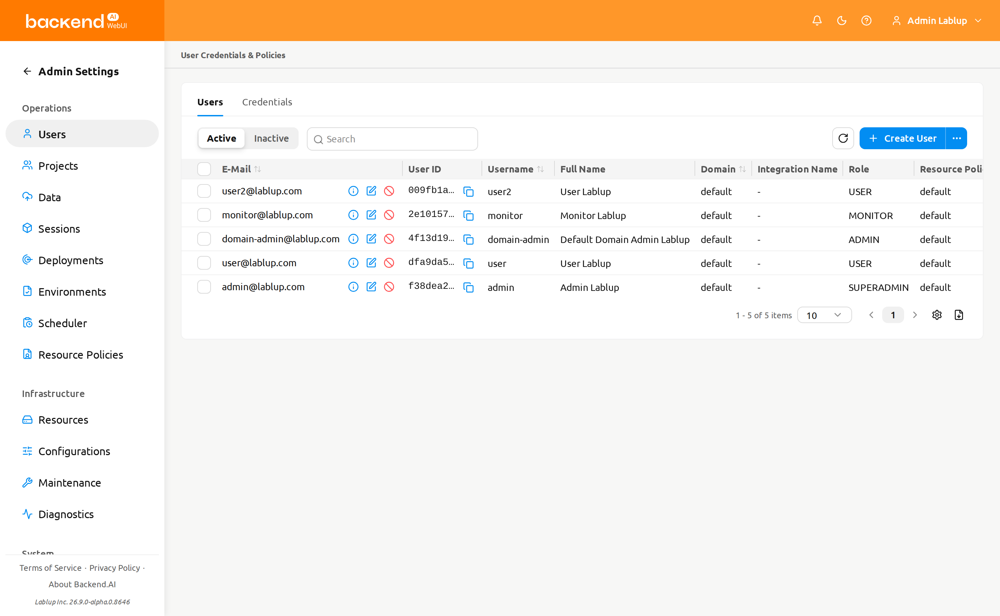
Browse and manage users#
A user can be created by clicking the +Create User button. Note that the password
must be longer or equal to 8 characters and at least 1 alphabet/special
character/number should be included. The maximum length allowed for E-Mail, User Name, and Full Name is 64 characters.
If a user with the same email or username already exists, it is not possible to create a user account. Please try other email and username.
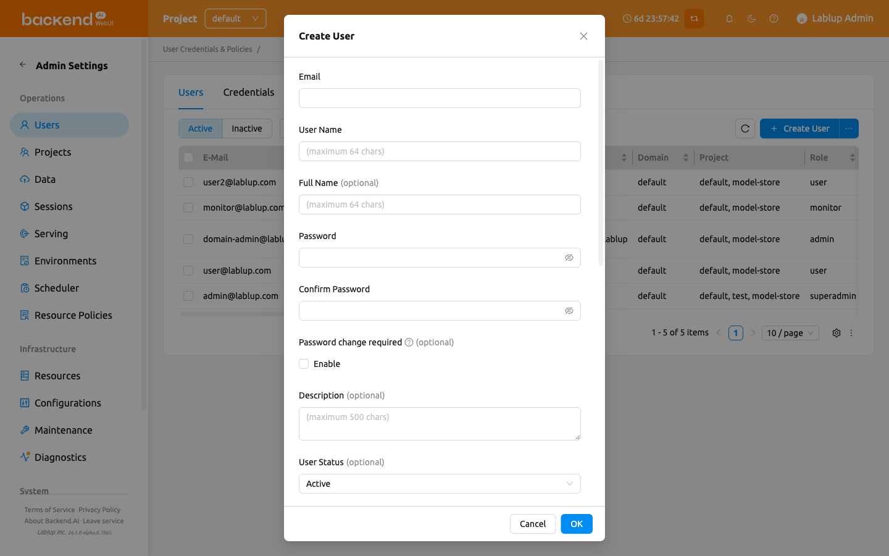
Check if the user is created.
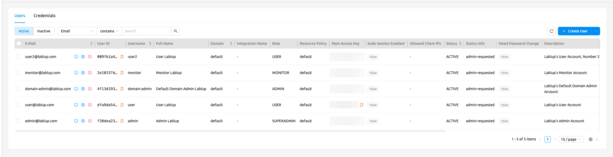
Click the info icon in the user's Email column row for more detailed user information. You can also check the domain and project information where the user belongs.
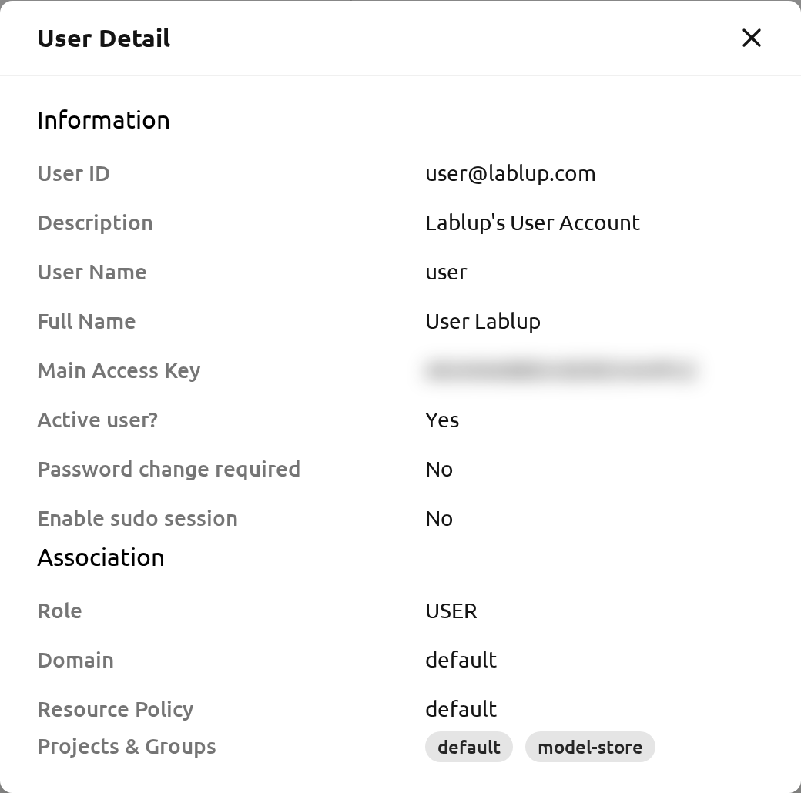
Click the Edit (pencil) icon in the user's Email column row to change the settings of a user who already exists. User's name, password, activation state, etc. can be changed. User ID (email) cannot be changed. Click Save to apply your changes.
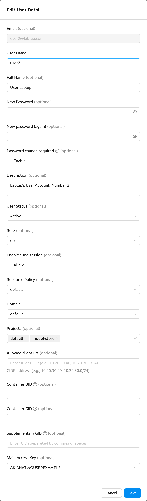
The user create/edit dialog contains the following fields:
E-Mail: The user's email address, used as the login ID. Cannot be changed after creation.
Username: A unique identifier for the user (up to 64 characters).
Full Name: The user's display name (up to 64 characters).
Password: Must be at least 8 characters and include at least 1 alphabet, 1 special character, and 1 number.
Require password change?: If the admin has chosen random passwords while creating users in batches, this field can be set to ON to indicate that password change is required. The users will see the top bar that notify user to update their password, but this is a kind of descriptive flag which has no effect on actual use.
Description: An optional description for the user (up to 500 characters).
User Status: Indicates the user's status. Inactive users cannot log in. Before Verification is a status that indicates a user needs an additional step to activate the account such as email verification or an approval from an admin. Note that the inactive users are listed in the Inactive tab separately.
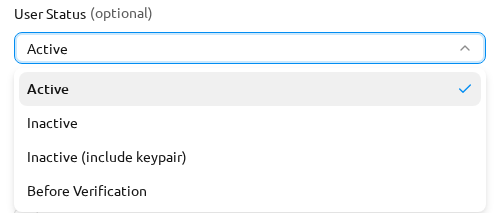
Figure 24.6 Role: The user's role (user, admin, superadmin). Available options depend on the current user's permissions.
Enable sudo session: Allow the user to use sudo in the compute session. This is useful when the user needs to install packages or run commands that require root privileges. However, it is not recommended to enable this option for all users, as it may cause security issues.
2FA Enabled: A flag indicating whether the user uses two-factor authentication. When using two-factor authentication, users are additionally required to enter an OTP code when logging in. Administrators can only disable two-factor authentication for other users.
Resource Policy: Select the user resource policy to which the user belongs. For more information about user resource policies, please refer to the user resource policy section.
Domain: The domain to which the user belongs. This field is shown in both the create and edit dialogs.
Projects: Select one or more projects for the user to belong to. The available projects depend on the domain shown in the dialog.
Allowed Client IPs: Restrict which IP addresses can access the system using this user account. Enter IP addresses or CIDR notation (e.g.,
10.20.30.40,10.20.30.0/24). If left empty, access from any IP is allowed.Container UID: The numeric User ID assigned to processes inside the container. This is useful when the container needs to match a specific UID for file permission purposes.
Container GID: The default numeric Group ID assigned to processes inside the container.
Supplementary GID: Additional numeric Group IDs assigned to container processes. Enter multiple GIDs separated by commas.
Main Access Key: (Edit only) Select the main access key used for API authentication among the user's keypairs.
In the Users list, columns that hold several values — Allowed Client IPs and Supplementary GID —
show the first value inline and collapse the rest behind a +N tag. Hover over the tag to see the
complete list without widening the column.
Bulk create users#
When you need to create multiple user accounts at once, you can use the Bulk Create
Users feature. An ellipsis (...) dropdown button appears
next to the Create User button on the Users page. Click this dropdown button and
select Bulk Create Users to open the bulk creation dialog.
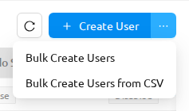
The bulk creation dialog contains the following fields. An info banner at the top of the dialog explains that emails and usernames will be auto-generated by appending zero-padded sequential numbers to the prefix.
- Email prefix (before @): The prefix portion of the auto-generated email addresses. Must contain only letters, numbers, dots, hyphens, or underscores (max 30 characters).
- Email suffix (after @): The domain portion of the auto-generated email addresses.
This field displays a
@prefix automatically (max 30 characters). - Number of users: The number of user accounts to create (1 to 100). A live email
preview is displayed below this field, showing the email addresses that will be generated.
For 4 or fewer users, all emails are shown. For more than 4, the first two, an ellipsis,
and the last email are displayed (e.g.,
student01@example.com, student02@example.com ... student10@example.com). - Password: A shared initial password for all created users. The same password rules apply as for single user creation (at least 8 characters with at least 1 alphabet, special character, and number).
- Password change required: Defaults to ON for bulk-created users. When enabled, each user will be prompted to change their password on first login.
- All other fields (Status, Role, Enable sudo session, Resource Policy, Domain, Projects, Allowed Client IPs, etc.) work the same as in single user creation. See the Browse and manage users section.
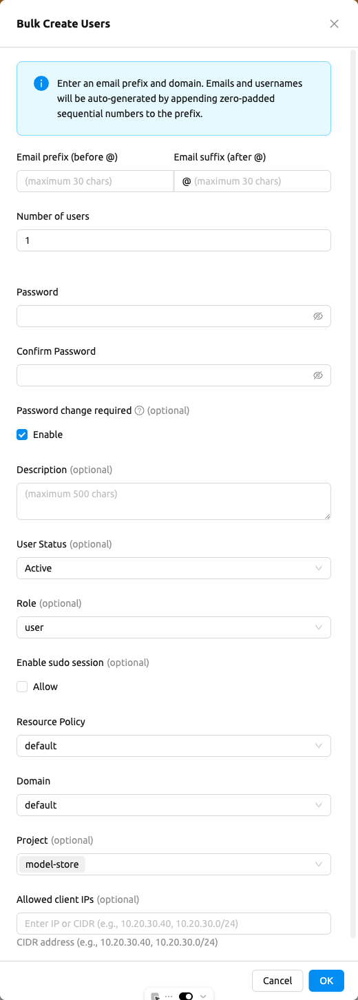
Usernames and email addresses are auto-generated based on the prefix and suffix you
provide. For example, if you set the email prefix to student and the email suffix to
example.com, and the number of users to 10, the following accounts will be created:
| Username | |
|---|---|
student01 |
student01@example.com |
student02 |
student02@example.com |
| ... | ... |
student10 |
student10@example.com |
Sequential numbers are zero-padded based on the total number of users. For example,
3 users produce student1 to student3, 10 users produce student01 to
student10, and 100 users produce student001 to student100.
If some of the generated usernames or email addresses already exist, the operation will partially succeed. A message reports how many users were created and how many failed, and a failure list shows each user that could not be created along with the reason.
Bulk create users from CSV#
Instead of bulk-creating users directly, you can also create users by uploading a CSV file. Click the ellipsis (...) dropdown next to the Create User button and select Bulk Create Users from CSV to open the CSV upload dialog.
Preparing the CSV file#
The CSV file must use UTF-8 encoding. The first row must be a header row. Header names are matched case-insensitively. You can download a ready-to-use template by clicking Download CSV Template inside the dialog.
Required columns:
- email: The user's email address, used as the login ID.
- username: A unique username for the user.
A file that is missing one of these two columns is rejected, and the dialog explains which column is missing.
Optional columns:
- password: The initial password. The same password rules apply as for single user creation (at least 8 characters with at least 1 alphabet, special character, and number). A password is still required for every account, but it does not have to come from the file — see the note below.
- full_name: The user's display name.
- role: The user's role (
user,admin, orsuperadmin). Defaults touserif omitted. - status: The user's initial status (
activeorinactive). Defaults toactiveif omitted. - domain_name: The domain to assign the user to. Defaults to the current domain if omitted.
- description: An optional description for the user.
- need_password_change: Whether the user must change their password on first login (
trueorfalse). Defaults totrueif omitted. - resource_policy: The name of the resource policy to assign.
- project: The name of the project to add the user to.
Uploading and reviewing#
The left side of the dialog holds a Defaults panel. Any value you set there fills in the matching
field for every row that leaves it blank, so you do not have to repeat it in each CSV cell. The panel
covers Domain, Project, Resource Policy, Password, Password change required, and
Description. Fields you leave alone read No default.
After selecting your CSV file, the dialog shows a preview table listing all rows with the following indicators:
- Rows with valid data are shown normally.
- Rows with formatting or validation errors are highlighted with inline error messages so you can correct the source file before retrying.
- A summary at the top of the preview shows the total number of valid and invalid rows.
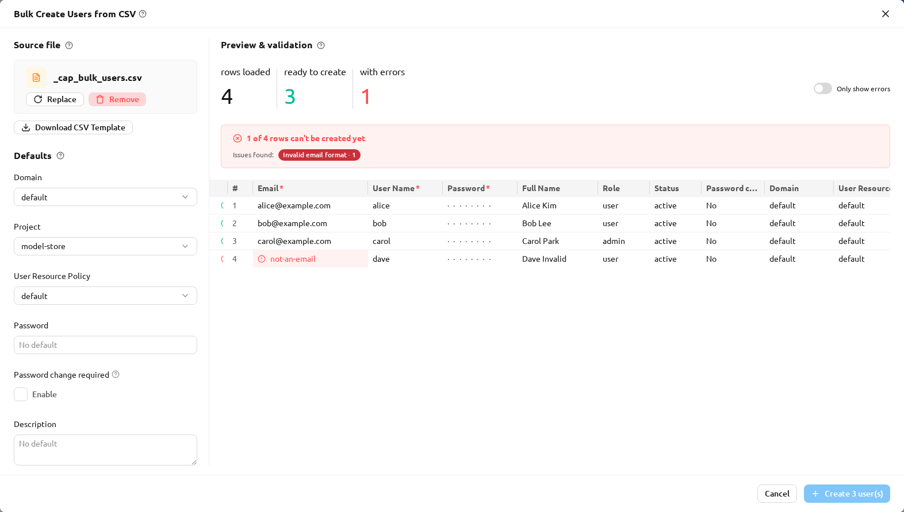
A CSV without a password column — for example a file exported from the Users list — loads
normally. The rows simply show a per-row Password is required. error, and the create button stays
disabled while any row carries one. Enter a password in the Defaults panel and the preview updates
live: the errors clear and the button enables, with no need to re-upload the file.
Creating the users#
Once you have reviewed the preview and confirmed that all rows are valid, click Create N user(s) to submit. If some rows fail on the server side (for example, because an email or username already exists), the dialog remains open and lists the per-row errors so you can identify and resolve the conflicts.
When only some of the rows succeed, a message reports N user(s) created. M user(s) failed., and a failure list opens on top of the dialog showing every user that could not be created — the email, the username, and the error returned for each. If some accounts were created, the generated keypair list appears first and the failure list follows once you close it. The accounts that were created are kept, so you only need to correct the rows that were reported.
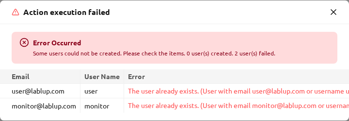
If some rows fail, only the successful rows result in new accounts. Failed rows are reported individually. Correct the source CSV and re-upload to create the remaining accounts.
Bulk edit users#
When several accounts need the same change — moving them to another domain or project, switching their resource policy, or setting the container UID/GID — you can edit them in one pass instead of opening each user in turn.
- Select the users you want to change with the row checkboxes in the Users list.
- A selection count appears in the toolbar. Click the edit (pencil) button next to it.
- The Bulk Edit Users dialog opens.
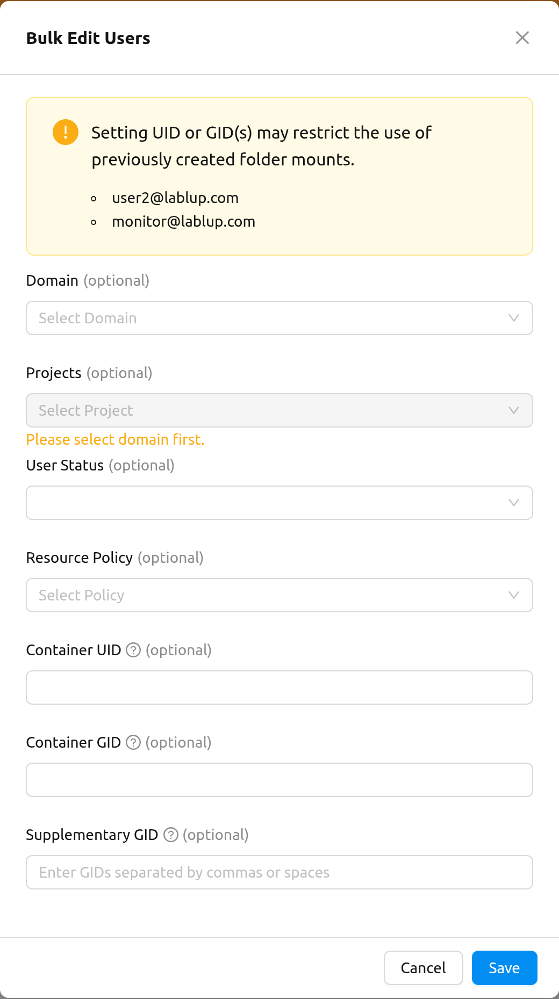
An alert at the top of the dialog lists every user the change will be applied to, by email address, so you can confirm the selection before committing. The alert also warns that setting a UID or GID may restrict the use of folder mounts that were created earlier.
The dialog exposes the following fields. A field you leave untouched is not changed on any of the selected users:
- Domain: Move the selected users to another domain. Changing it clears the Projects selection.
- Projects: Assign the selected users to one or more projects. A domain must be selected first.
- User Status: Set the accounts to Active, Inactive, Inactive (include keypair), or Before Verification.
- Resource Policy: Apply a user resource policy to every selected account.
- Container UID, Container GID, Supplementary GID: Set the numeric IDs assigned to processes inside the container.
When the operation finishes, a message reports how many of the selected users were updated. Any account that could not be changed is reported separately with its own error.
Inactivate user account#
To track usage statistics per user, retain metrics, and prevent accidental account loss, the recommended way to stop a user from logging in is to deactivate the account rather than delete it. Deactivation keeps the user's records intact while blocking sign-in. To deactivate a user, click the deactivate icon in the user's Email column row. A confirmation popover appears; click the Deactivate button to deactivate the user.
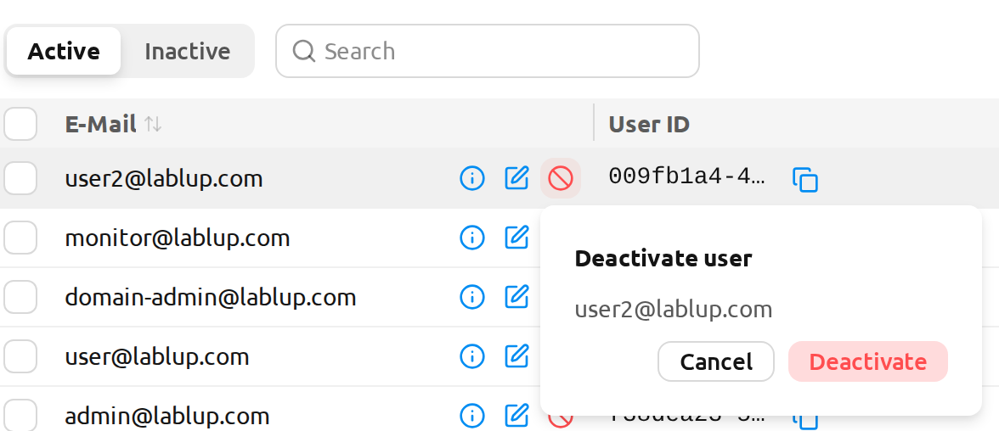
To reactivate a user, go to the Inactive tab on the Users page and click the reactivate (restore) icon in the user's Email column row. A confirmation popover appears; click the Activate button to reactivate the user.
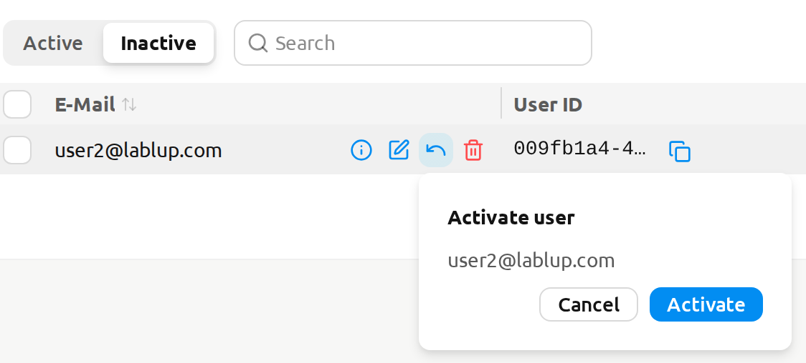
Please note that deactivating or reactivating the user does not change the user's credentials, since the user account can have multiple keypairs, which brings it hard to decide which credential should be reactivated.
While day-to-day account management relies on deactivation, superadmins can permanently remove accounts that are already inactive, using the Purge feature described below.
Purge inactive users#
Superadmins can permanently delete (purge) user accounts that have already been deactivated. Purging is available only for users in the Inactive tab — active users must be deactivated first. Unlike deactivation, purging is irreversible and also removes the user's associated data.
In the Users page, switch to the Inactive tab (the status selector reads Inactive (include keypair) to indicate that purging also affects the user's keypairs). You can purge users in two ways:
- Per-user purge: Click the trash-bin (permanently delete) icon in a single inactive user's Email column row.
- Bulk purge: Select one or more inactive users with the row checkboxes, then click the Permanently Delete Users button (the trash-bin button that appears next to the selection count).
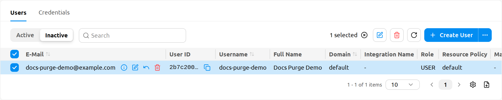
Either action opens the Permanently Delete Users confirmation modal. Because this operation cannot be undone, you must type the confirmation phrase shown in the modal before the delete button becomes enabled. The modal also offers two options:
- Delete shared virtual folders as well?: When checked, virtual folders shared by the purged users are also deleted. When unchecked, those folders are left in place.
- Delete created deployments as well?: When checked, deployments created by the purged users are deleted as well. When unchecked, ownership of those deployments is delegated instead of deleting them.
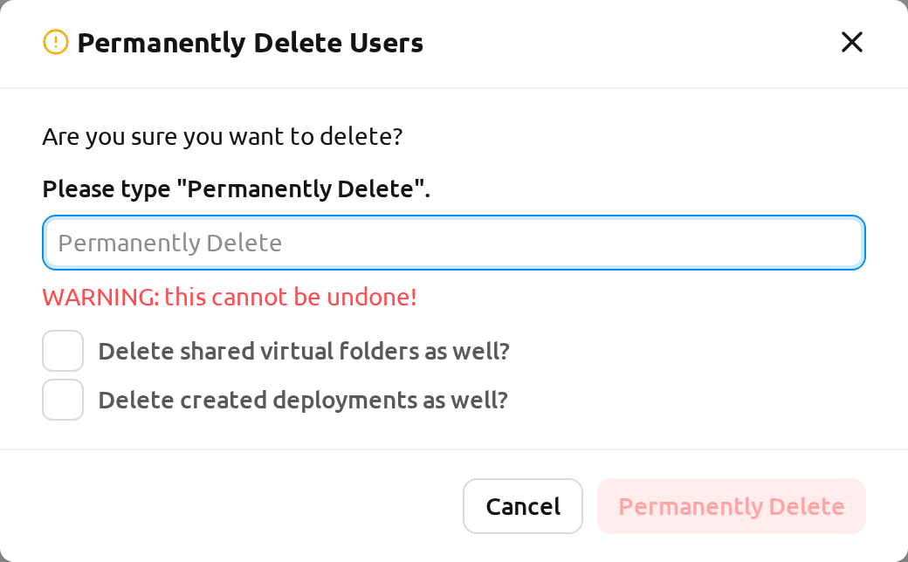
Purging a user is irreversible. The user's virtual folders, kernel history, and related keypairs are also deleted. Make sure you have selected the correct users before confirming.
Manage user's keypairs#
Each user account usually have one or more keypairs. A keypair is used for API authentication to the Backend.AI server, after user logs in. Login requires authentication via user email and password, but every request the user sends to the server is authenticated based on the keypair.
A user can have multiple keypairs, but to reduce the user's burden of managing keypairs, we are currently using only one of the user's keypairs to send requests. Also, when you create a new user, a keypair is automatically created, so you do not need to create and assign a keypair manually in most cases.
Keypairs can be listed on the Credentials tab of in the Users page. Active keypairs are shown immediately, and to see the inactive keypairs, click Inactive above the table.
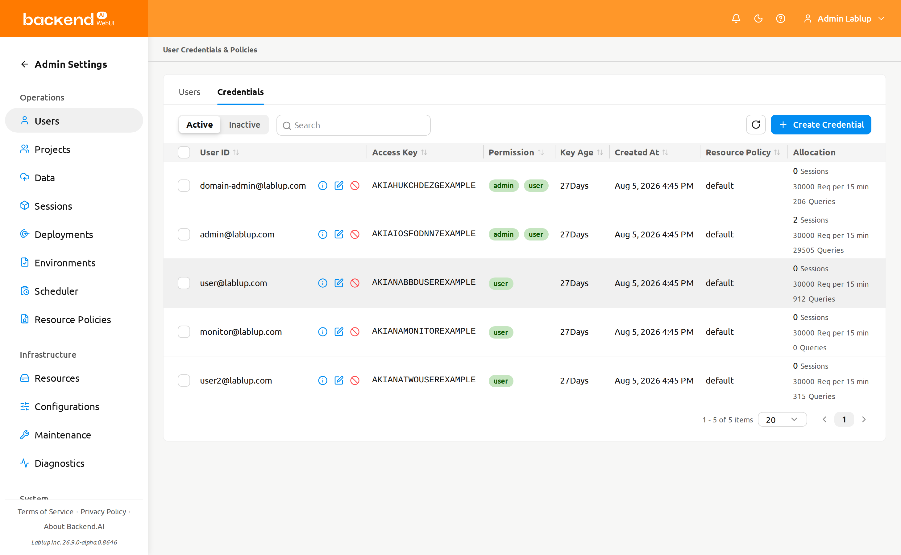
Like in Users tab, you can use the inline buttons in the keypair's row to view or edit keypair details. Click the info icon button to see specific details of the keypair. If necessary, you can copy the secret key by clicking the copy button.
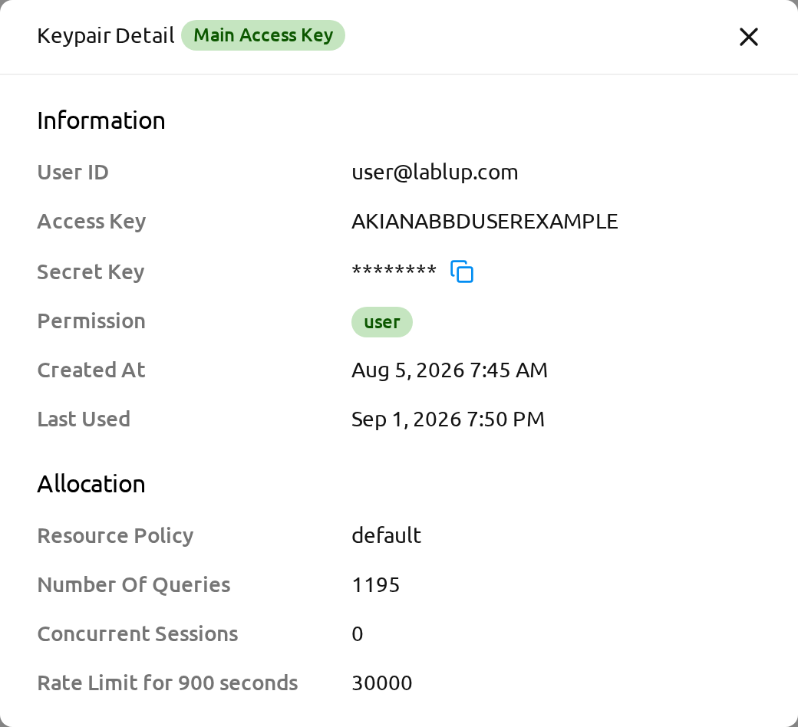
You can change the resource policy and rate limit of the keypair by clicking the Edit (pencil) button in the keypair's row. The dialog is titled Edit Keypair Resource Policy; click Save to apply your changes. Please keep in mind that if the Rate Limit value is small, API operations such as login may be blocked.
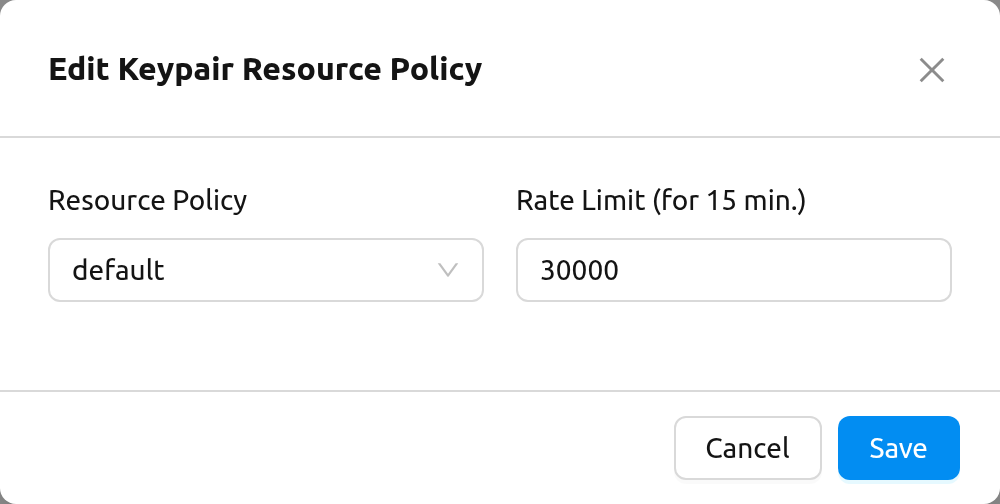
You can also deactivate or reactivate the keypair by clicking the Deactivate button or Activate button in the keypair's row.
Unlike the User tab, the Inactive tab allows permanent deletion of keypairs.
However, you cannot permanently delete a keypair if it is currently being used as a user's main access key.
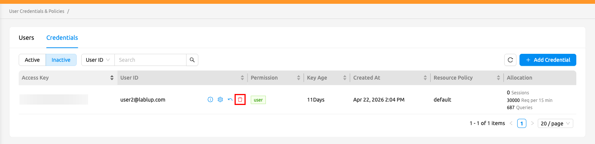
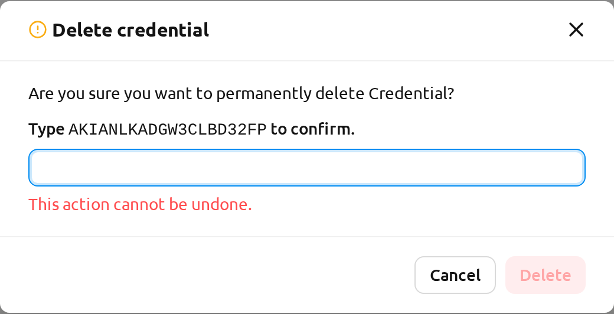
Activate or deactivate several credentials at once#
Instead of working through the rows one by one, you can change the status of many keypairs in a single step:
- Select the keypairs with the row checkboxes.
- A selection count appears in the toolbar, followed by a status button — Deactivate on the Active tab, Activate on the Inactive tab.
- Click the button. A confirmation dialog states how many credentials are affected and what the change means for their owners.
- Confirm to apply the change.
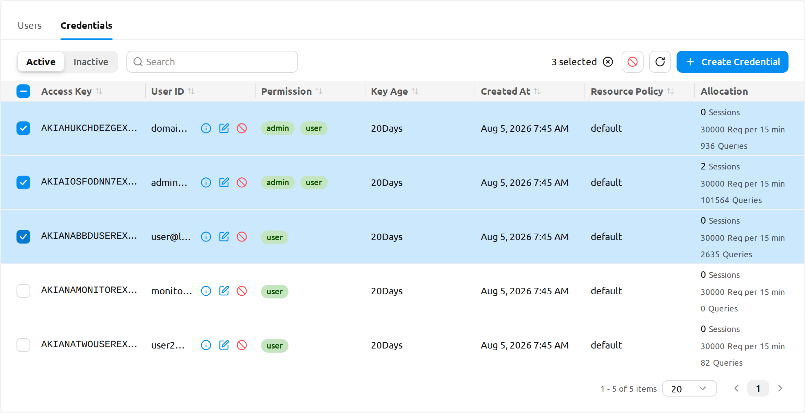
If only part of the batch succeeds, the result message reports the number of credentials that were changed and the number that failed. The selection is cleared whenever you switch tabs, change the filter, sort the table, or move to another page.
Create a credential#
If you accidentally deleted a keypair, you can create a new one for the user by clicking the Create Credential button at the upper right corner.
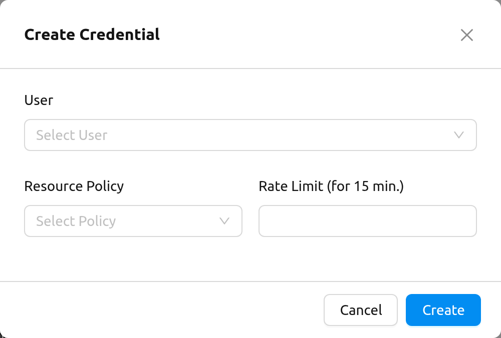
The dialog contains the following fields:
User: A searchable select listing the existing user accounts. Start typing to narrow the list, then pick the account the new keypair belongs to. Because the account is chosen from the list, it is no longer possible to submit an address that does not belong to a real user.
Resource Policy: The keypair resource policy to apply to the new keypair.
Rate Limit (for 15 min.): The maximum number of requests that can be sent to the Backend.AI server in 15 minutes. For example, if set to 1000 and the keypair sends more than 1000 API requests in 15 minutes, the server throws an error and does not accept the request. It is recommended to use the default value and increase it when the API request frequency goes up high according to the user's pattern.
The maximum accepted value is 50000. Entering a larger number shows the validation message
Rate Limit should be greater than zero and below 50000.and blocks the submission, so the value you typed is never silently reduced. A value of 100 or less is accepted but shows a warning, because a small rate limit can block operations such as login.
Share project storage folders with project members#
Backend.AI provides storage folders for projects, in addition to user's own storage folder. A project storage folder is a folder belonging to a specific project, not a specific user, and can be accessed by all users in that project.
Project folders can be created only by administrators. Normal users can only access the contents of the project folder created by the administrator. Depending on the system settings, project folders may not be allowed.
First, log in with an admin account and create a project folder. After moving to
the Data page, click Create Folder to open the folder creation dialog.
Enter the folder name, set the Type to Project. When the type is set to Project,
it will be automatically assigned to the project selected in the project selector in the header.
Permission is set to Read-Only.
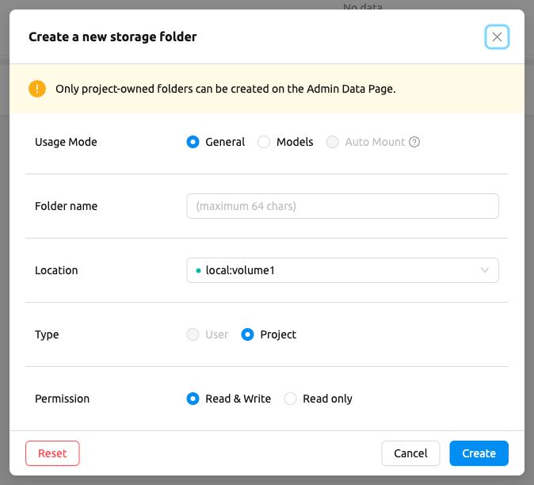
After confirming that the folder has been created, log in with the User B's account and check that the project folder just created on the Data & Storage page is displayed without any invitation procedure. You can see that R (Read Only) is also displayed in the Permission panel.
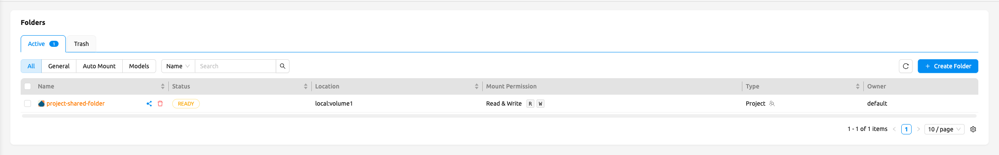
Model deployment#
Admin deployments page#
Administrators and superadmins can access the Admin Deployments page at /admin/deployments, which provides a cross-project view of every deployment in the cluster. The Project column is available in the deployment list but is hidden by default; you can enable it using the column settings.
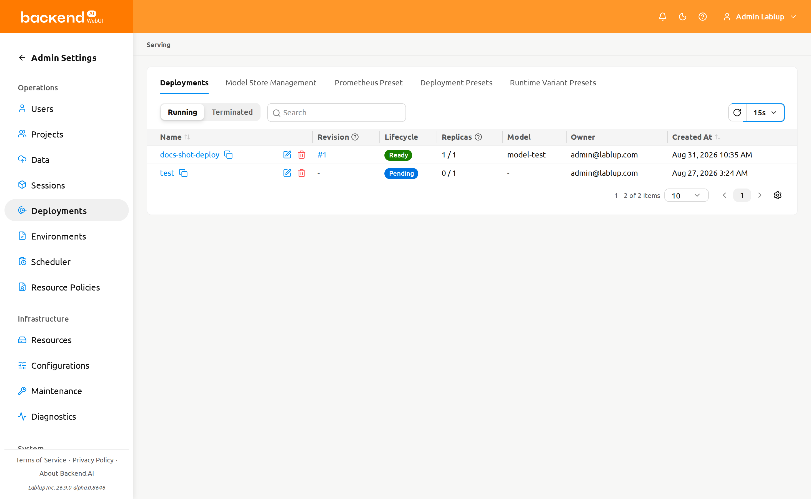
The Admin Deployments page has up to four tabs:
- Deployments: Displays the deployment list across all projects, with the same lifecycle and property filters as the user-facing Deployments page.
- Model Store Management: See the Admin Model Store Management section below.
- Prometheus Preset: Lets administrators manage reusable Prometheus query presets. See the Prometheus Query Presets section below.
- Deployment Presets: Lets administrators manage reusable deployment presets that end users can apply when deploying a model. See the Deployment Presets section below.
Each individual admin deployment has its own address under the Admin Deployments page,
/admin/deployments/<deployment id>. When you open a deployment from the Admin Deployments page, the
URL changes to this path so that the deployment detail can be linked to or bookmarked directly.
Deployment detail page#
When you open a deployment from the Admin Deployments page, the Revisions card on the Deployment Detail Page provides three tabs: Current Revision, Revision History, and Audit Log. These behave the same as on the user-facing Deployments page — for the full description of each tab, see the Revisions Tab section in the Model Deployment documentation.
- Current Revision: Shows the full configuration of the revision currently serving traffic. This includes a Runtime Parameters row that lists the runtime-variant parameter values configured for the revision (for
vLLMandSGLangruntimes). - Revision History: Lists every revision added to the deployment. Clicking a revision opens a detail view that shows the full configuration of that revision, including the Runtime Parameters row for
vLLMandSGLangrevisions. - Audit Log: Shows a record of actions performed on the deployment.
The Audit Log tab tracks all action history for the deployment. Each entry includes:
- Time: The timestamp when the action was performed.
- Operation: The type of action performed.
- Status: The result of the operation.
- Description: Additional details about the operation.
- Duration: The time taken to complete the operation.
- Triggered By: The user who initiated the action.
You can filter entries by Status, Operation, Triggered By, and a Time date-range picker.
Admin Model Store management#
Superadmins can manage model cards through the Model Store Management tab on the Admin Deployments page.
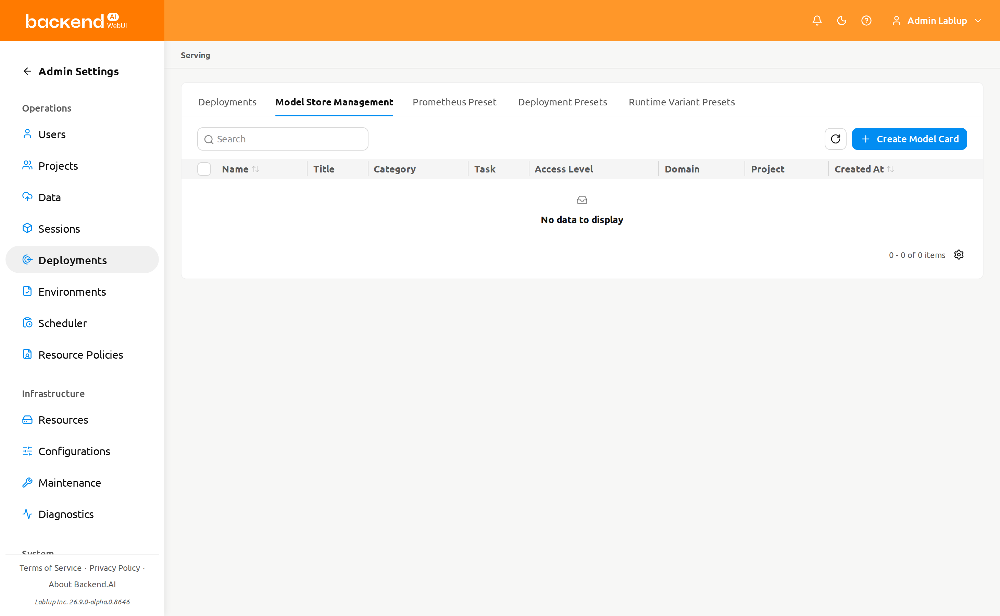
The list provides the following columns:
- Name: The unique identifier of the model card.
- Title: The human-readable display name.
- Category: The model category (e.g., LLM).
- Task: The inference task type (e.g., text-generation).
- Access Level: Shows a green
Publictag when the model card is publicly accessible, or a defaultPrivatetag otherwise. - Domain: The domain that owns the model card.
- Project: The project that owns the model card.
- Created At: The timestamp when the model card was created.
You can narrow the list using the property filter bar at the top, which supports filtering by the following properties:
- Name: Filter by the model card's name (string match).
- Domain: Filter by the owning domain (string match).
- Project: Filter by the owning project's UUID. The value is checked before the filter is applied, so a malformed identifier is rejected with a message instead of returning an empty list.
- Storage Host: Filter by the storage host of the linked folder. Instead of typing a value, pick the host from a dropdown of the hosts registered on this cluster; the equals and not-equals operators are both available.
Edit and delete action icons are shown directly in the Name cell of each row.
To delete multiple model cards at once, select the rows you want to remove using the checkboxes and click the red trash-bin button next to the selection count. A confirmation dialog appears before the cards are deleted.
Creating a model card#
Click the Create Model Card button to open the creation modal. Fill in the following fields:
Name (required): A unique identifier for the model card.
Title: A human-readable display name.
Description: A detailed description of the model.
Author: The model creator or organization.
Model Version: The version of the model.
Task: The inference task type (e.g., text-generation).
Category: The model category (e.g., LLM).
Framework: The ML framework used (e.g., PyTorch, TensorFlow). This is a tag input — type a value and press Enter or type a comma to add each entry.
Label: Tags for categorization and filtering. Like Framework, this is a tag input — press Enter or type a comma to add each tag.
License: The license under which the model is distributed.
Architecture: The model architecture (e.g., Transformer).
README: A markdown README for the model.
Domain: The domain to associate the model card with. When creating a new model card, this field is pre-filled with your current domain; you can change it if needed.
Project ID (required): The project that owns the model card.
VFolder (required): The storage folder containing the model files.
Access Level: Controls who can see the model card in the user-facing Model Store.
Internal: Visible only to administrators of the owning domain and project. Regular users cannot see internal cards in their Model Store.Public: Visible to all users who have access to the owning project.
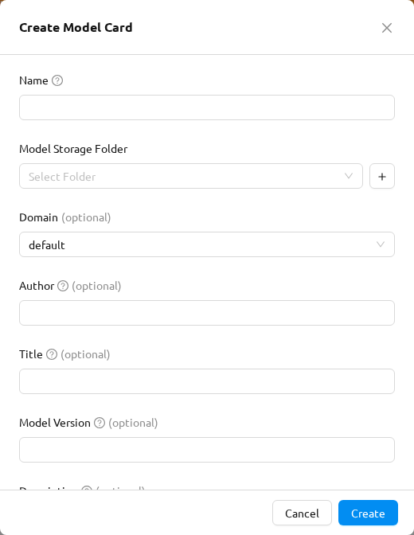
Editing a model card#
Click the edit icon next to the model card name to modify an existing model card. The edit modal opens with previously entered fields already filled in.
Deleting model cards#
You can delete an individual model card by clicking the delete icon next to its name, or perform bulk deletion by selecting multiple model cards with the row checkboxes and clicking the red trash-bin button next to the selection count.
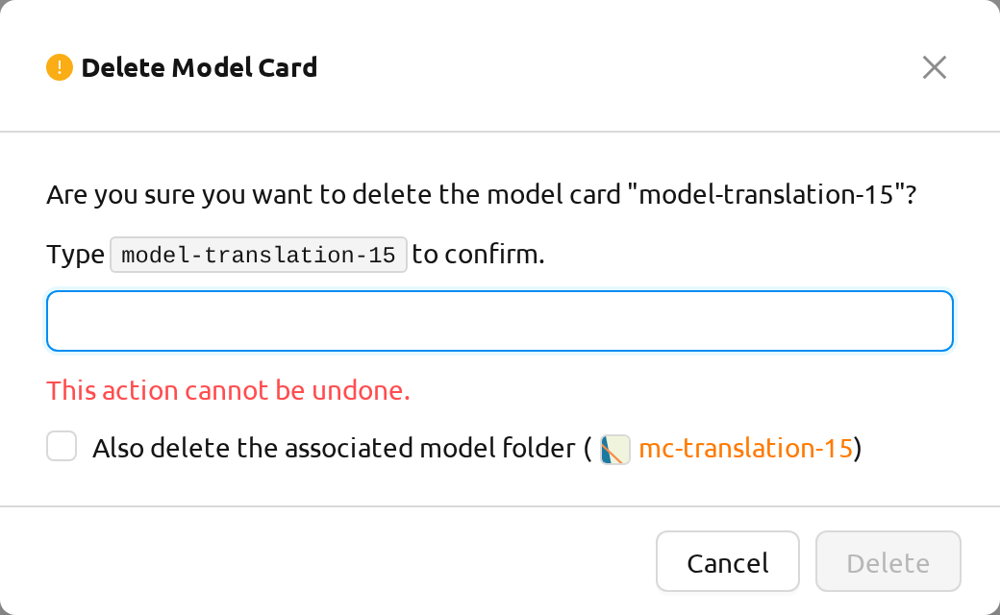
The deletion confirmation dialog includes an Also delete the associated model folder option:
- When this option is checked, the storage folder (vfolder) linked to the model card is moved to the trash at the same time the model card is removed. A trash notification appears so superadmins can confirm that the linked folder was sent to the trash, and the folder can be restored (or permanently deleted) from Data > Trash if needed. Note that deleting the associated folder also removes every other model card that references the same folder.
- When this option is unchecked, only the model card record is removed; the linked storage folder remains untouched and can be reused for another model card.
The same behavior applies to bulk deletion (the label becomes Also delete all associated model folders): each selected model card's linked storage folder is moved to the trash when the option is checked, and a trash notification is shown for each folder that was moved.
Prometheus query presets#
Backend.AI lets administrators define reusable Prometheus query presets that auto-scaling rules and other monitoring features can reference by name. A preset bundles a metric name, a PromQL query template, an optional time window, and optional filter / group labels so operators do not have to retype the same query for every rule.
The presets are managed from the Prometheus Preset tab on the Admin Deployments page (/admin/deployments?tab=prometheus-preset).
When a superadmin opens the Auto Scaling Rule editor for a deployment, sets Metric Source to Prometheus, and selects a preset, a live Current value preview appears below the preset selector showing the latest metric value from Prometheus. This preview is only visible to superadmin accounts — regular users and domain admins do not see it.
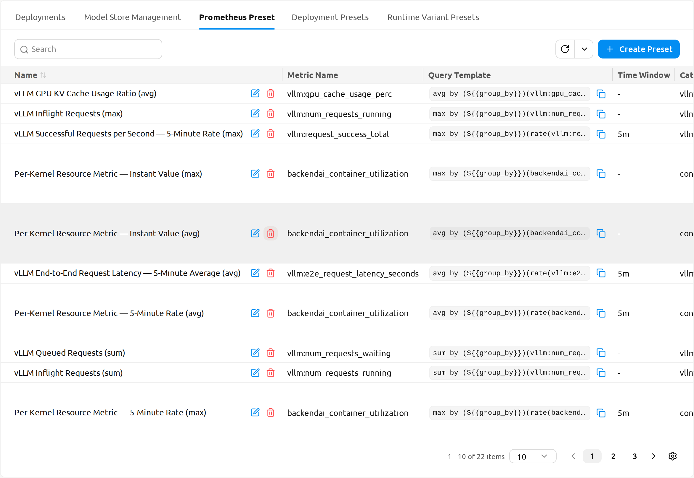
List & filter#
The preset table lists all Prometheus query presets across the cluster. Each row shows:
- Name: A unique, human-readable identifier for the preset. The cell also exposes inline Edit and Delete actions.
- ID: The preset's internal identifier.
- Metric Name: The metric this preset reports (used as the display label by consumers such as auto-scaling rules).
- Query Template: The PromQL expression that will be executed. The cell is copyable — hover over the value and click the copy icon to copy the full template to the clipboard. This is useful when you want to paste the template into a Prometheus UI to verify the result.
- Time Window: The default look-back window (for example,
5m) used when the query references a range vector. - Category: The optional category the preset belongs to (with the resolved category name and the category ID).
- Options: The optional Filter Labels and Group Labels that consumers can apply on top of the preset.
- Created At / Updated At: Timestamps maintained automatically by the server.
You can search and narrow the list with the property filter above the table, and click any column header to change the sort order.
Column settings persistence#
The table includes a column-settings control that lets you hide columns you do not need and reorder the visible columns. Your choices are persisted across sessions per browser, so the table opens with your preferred layout the next time you visit the tab. Resetting the column settings restores the default Backend.AI layout.
Create a preset#
Click Add Preset at the top right of the table to open the Create Preset modal.
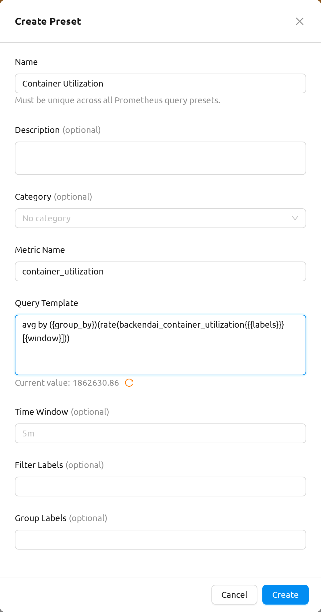
The modal contains the following fields:
- Name: The preset's unique name. Must be unique across all Prometheus query presets.
- Description: A free-form description shown alongside the preset in selectors.
- Category: An optional category for grouping related presets. This is a dropdown listing the categories defined on the server, not a free-text field; leave it empty for No category. While the category list is still loading, the field shows a loading indicator and the rest of the form stays usable.
- Metric Name: The metric label that consumers (for example, auto-scaling rules) will display.
- Query Template: The PromQL expression to execute. As you type, a live preview area below the field shows what value the template returns against your Prometheus instance, so you can verify the template works before saving. The preview is debounced and updates automatically as you edit.
- Time Window: The default range-vector window, for example
5m. Leave empty if the query does not use a range vector. - Filter Labels: Optional list of label selectors that consumers can apply on top of the preset.
- Group Labels: Optional list of labels to group the query result by.
Click Create to save the preset. On success, the preset appears in the list and a confirmation toast is shown.
The dialog starts from a clean slate every time you open it. Values you typed in a previous session — or the values of a preset you were editing a moment ago — never carry over into the next Create Preset or Edit Preset dialog.
Edit a preset#
Click the Edit action in the Name cell of a preset row to open the Edit Preset modal. The modal is pre-populated with the preset's current values and exposes the same fields as the Create dialog, including the live preview area for the Query Template.
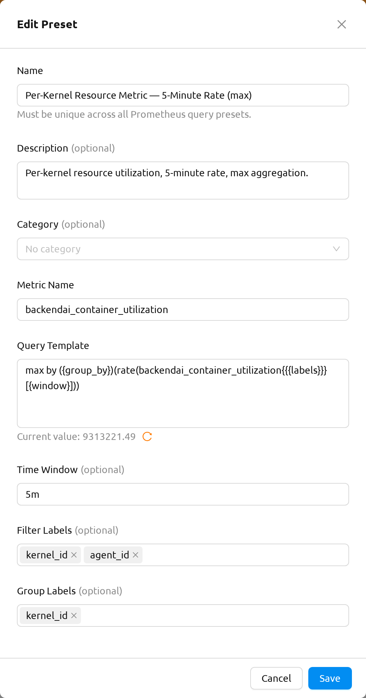
Click Save to apply your changes. Consumers of the preset (for example, auto-scaling rules referencing it) automatically pick up the new query template the next time they evaluate the metric.
Delete a preset#
Click the Delete action in the Name cell of a preset row to open the deletion confirmation modal.
Deleting a Prometheus query preset is permanent and cannot be undone. Auto-scaling rules and other features that reference the deleted preset will lose their query template and may stop functioning until they are reconfigured to point at a different preset.
Because deletion is irreversible, the dialog requires you to type the preset's name into the confirmation input before the Delete button becomes enabled. Type the exact preset name shown in the dialog title and click Delete to confirm.
Deployment presets#
A Deployment Preset is a reusable, administrator-curated bundle of deployment settings — image, runtime, resource slots, cluster mode, environment variables, startup command, replica count, visibility, and other defaults — that end users can apply when they create a model deployment from a storage folder. Presets let administrators publish a small set of vetted, known-good deployment shapes (for example, vLLM-GPU-Large or SGLang-CPU-Small) so that end users can deploy a model without having to choose every advanced field from scratch.
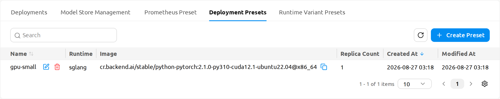
What is a deployment preset?#
A Deployment Preset captures the defaults of a model deployment so that:
- Administrators can offer end users a curated catalog of deployment shapes that match the organization's hardware and policy constraints.
- End users can pick a preset when deploying a model from the Data page (via the Create New Deployment with Preset flow) and skip filling in advanced fields manually.
- Operators can ensure that production deployments use consistent resource allocations, runtimes, and visibility defaults across the organization.
When a deployment is created from a preset, the preset's values pre-populate the deployment fields. Users can still review and adjust those fields before confirming the deployment.
Each preset stores the following deployment defaults:
- Basic Info: Name, description, runtime variant, and image.
- Runtime Parameters: Serving-framework parameters for vLLM or SGLang runtimes (not shown for the Custom runtime).
- Resources: Resource slots (CPU, memory, GPU), shared memory (SHM), and resource options.
- Cluster: Cluster mode (Single Node or Multi Node) and cluster size.
- Model & Execution: Startup command, bootstrap script, and environment variables.
- Model Definition (optional): Model name, model path, service configuration (port, startup command, pre-start actions), Health Check, and metadata.
- Deployment: Replica count, revision history limit, and the Open to Public visibility default.
Managing deployment presets#
Only administrators can create, edit, or delete deployment presets. Administrators manage them from the Deployment Presets tab on the Admin Deployments page.
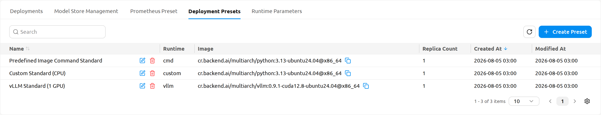
The list view shows each preset with its key fields. From this list, administrators can:
- Filter presets by name or runtime.
- Open a preset's detail view to inspect its full configuration.
- Create, edit, or delete a preset.
The following columns are visible by default: Name (with inline edit and delete actions), Runtime, Image (displayed in <canonicalName>@<architecture> format and copyable), Replicas, Created At, and Modified At.
Additional columns are hidden by default and can be shown using the column-settings gear button (⚙) at the right of the table header: Description, Startup Command, Cluster, Strategy, Open to Public (shown as a Public/Private tag), and Revision History Limit. Your column choices are persisted per browser across sessions.
Create a deployment preset#
Click the Create Preset button at the top right of the preset list.
Fill in the fields in the Create Preset dialog. The dialog is organized into the following cards, presented across two steps:
- Basic Info:
- Name (required): A unique preset name (for example,
vLLM-GPU-Large). - Description: A short summary of the preset's intended use.
- Runtime (required): The runtime variant (for example, vLLM, SGLang, or Custom).
- Runtime Parameters (appears only when a non-Custom runtime such as vLLM or SGLang is selected): The serving framework parameters for this preset, organized in tabs — for example, Model Loading, Resource Memory, and Serving Performance. Required parameters are marked with a red asterisk (★) next to the label, and the save button stays disabled until every required parameter is filled in — including required parameters on tabs you have not visited yet.
- Image (required): The container image to use when deploying. Images are listed in
<canonicalName>@<architecture>format (for example,cr.backend.ai/stable/pytorch:2.1-cuda12.1@aarch64), which helps distinguish images by CPU architecture on mixed-architecture clusters.
- Name (required): A unique preset name (for example,
- Resources: Resource slots (CPU, memory, GPU), shared memory, and resource options (key/value pairs).
- Cluster: Cluster mode (Single Node or Multi Node) and cluster size.
- Deployment:
- Replica Count (required): Default number of replicas created from this preset.
- Revision History Limit: Number of past revisions kept for each deployment created from this preset.
- Open to Public: A checkbox controlling whether the endpoint of deployments created from this preset is reachable without an access token by default.
- Model & Execution: Startup Command, bootstrap script, and environment variables. The Startup Command field shows a shell-syntax hint (
Shell syntax: /bin/bash -c "cmd1; cmd2") because the command is executed as/bin/bash -c <command>. This means you can use shell operators such as;,|, and&&directly in the field. - Model Definition (optional): Enable the toggle to configure a structured model definition. When enabled:
- Model Name and Model Path: The model identifier and its location in the container.
- Service Configuration: Port, shell, startup command, and pre-start actions.
- Health Check: An Enable Health Check toggle, which is off by default. When the toggle is off, the health check fields are hidden. When you turn it on, the health check fields appear and become configurable: Path, Interval, Max Retries, Max Wait Time, Status Code, and Startup Grace Period.
- Metadata: Author, title, version, task, category, and other descriptive fields.
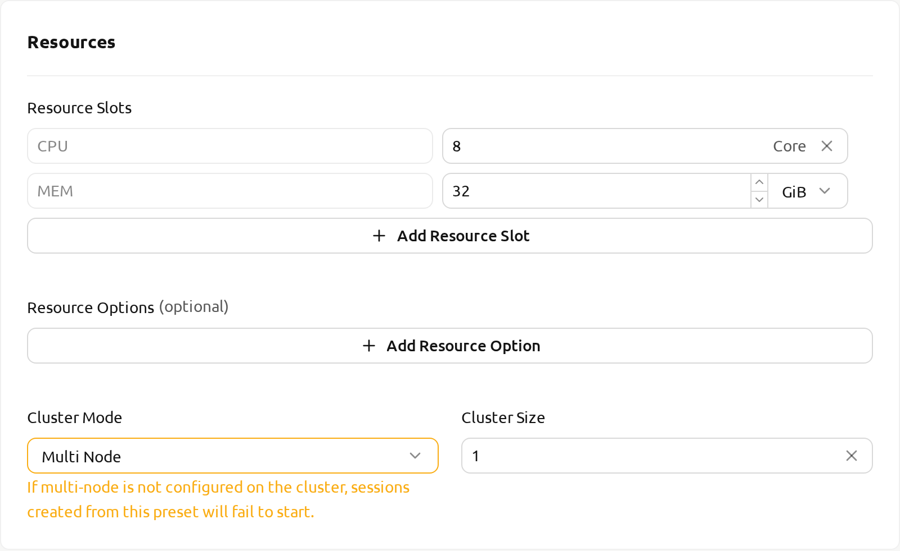
Figure 24.35 - Basic Info:
Click Create Preset to save. A success notification confirms the preset has been created.
If a required field is missing or invalid, the Create Preset button stays disabled until the error is resolved. Required fields show inline validation messages as you type.
Edit a deployment preset#
- From the preset list, open the action menu on the preset row (or open the preset's detail view) and select Edit Preset.
- The Edit Preset dialog opens with the preset's current values pre-filled. The available sections are identical to the Create Preset dialog.
- Adjust the fields as needed, then click Edit Preset to save your changes.
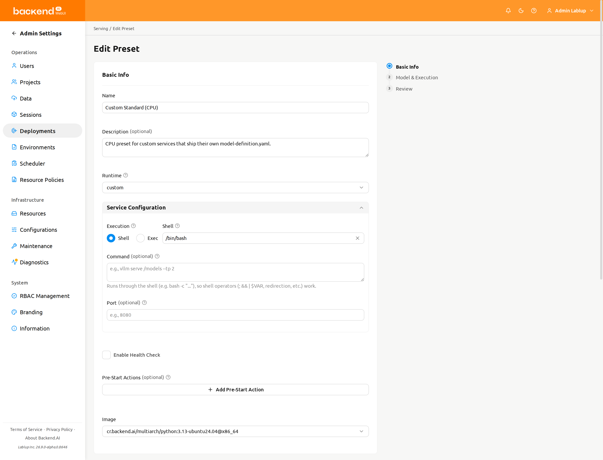
Editing a preset only changes the defaults for future deployments. Existing deployments that were already created from this preset are not modified.
Delete a deployment preset#
- From the preset list (or the preset's detail view), open the action menu on the preset and select Delete Preset.
- A typed-confirmation dialog appears asking you to type the preset's name to confirm. The OK button stays disabled until the typed value matches the preset name exactly.
- Type the preset's name, then click OK to confirm.
Deleting a deployment preset is irreversible. The preset itself is removed, but deployments that were already created from it continue to run unaffected. Future deployments can no longer reference this preset.
Using a preset when deploying a model#
End users apply a deployment preset through the Create New Deployment with Preset modal, which opens when you deploy a model from a storage folder on the Data page.
- From the Data page, locate the model folder you want to deploy.
- Click the Deploy button on the folder row.
- The Create New Deployment with Preset modal opens. Select the deployment preset to apply and the target resource group.
- To inspect the preset's configuration before deploying, click the ⓘ (Info) button next to the preset selector to open the Deployment Preset Detail view.
- Click OK to create the deployment using the selected preset's values.
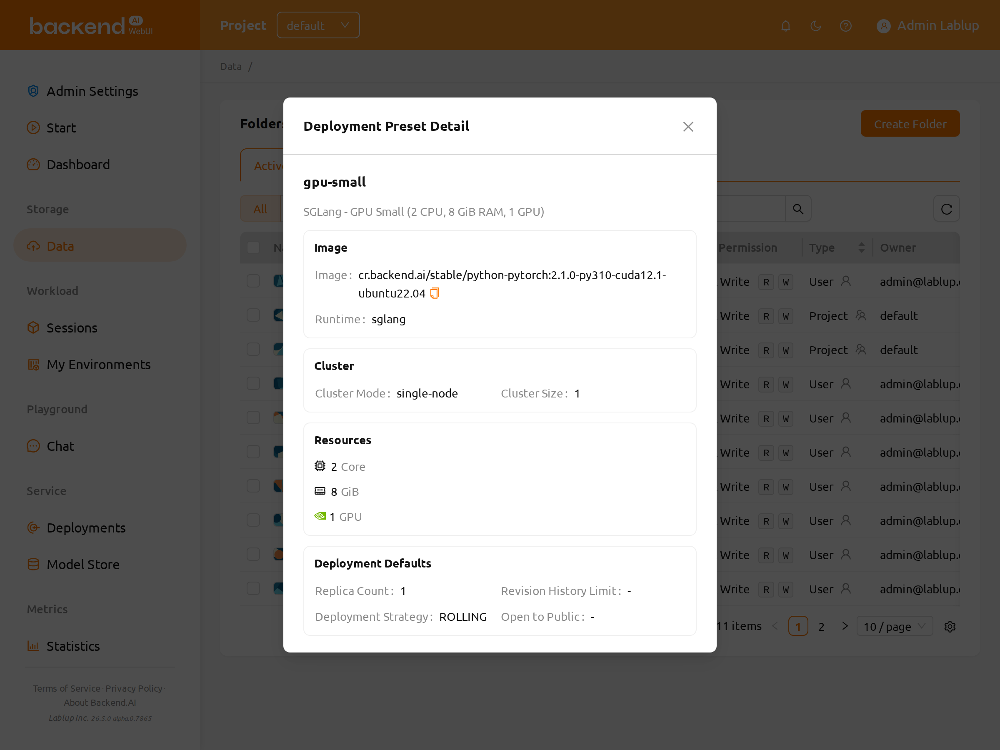
The Deployment Preset Detail view shows every field that the preset will apply when used — image, runtime, resources, cluster mode, replica count, visibility, and so on. It also includes a Health Check card:
- When health check is enabled in the preset: the card shows Enabled along with the configured Path, Interval, Max Retries, Max Wait Time, Status Code, and Startup Grace Period.
- When health check is disabled: the card shows Disabled.
For advanced configuration, go to the Deployments page and create a new deployment manually. The revision-add modal offers two modes: Preset Mode (applies the preset directly) and Advanced Mode, where the deployment launcher opens pre-filled with the preset's values so you can review and adjust every field — image, runtime variant, resource group, resource slots, shared memory, resource options, cluster mode, cluster size, startup command, environment variables, replica count, revision history limit, and Open to Public visibility — before confirming. Editing a field in Advanced Mode does not modify the underlying preset; it only changes the values used for that one deployment.
Manage resource policies#
Keypair resource policy#
In Backend.AI, administrators have the ability to set limits on the total resources available for each keypair, user, and project. Resource policies enable you to define the maximum allowed resources and other compute session-related settings. Additionally, it is possible to create multiple resource policies for different needs, such as user or research requirements, and apply them on an individual basis.
The Resource Policies page allows administrators to view a list of all registered resource policies. Administrators can review the resource policies established for keypairs, users, and projects directly on this page. Let's begin by examining the resource policies for keypairs. The infinity symbol (∞) indicates that no resource restrictions have been applied to those resources.
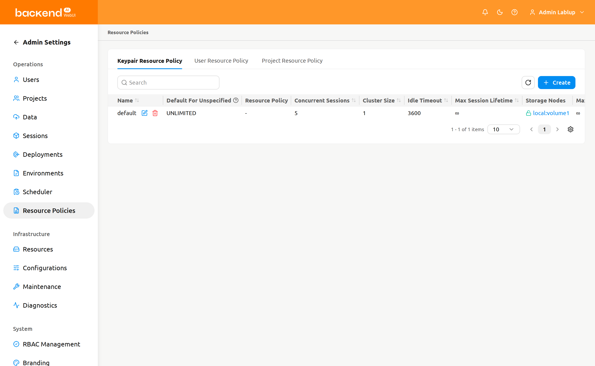
The user account being used in this guide is currently assigned to the default resource policy. This can be verified in the Credentials tab on the Users page. You can also confirm that all resource policies are set to default in the Resource Policies panel.
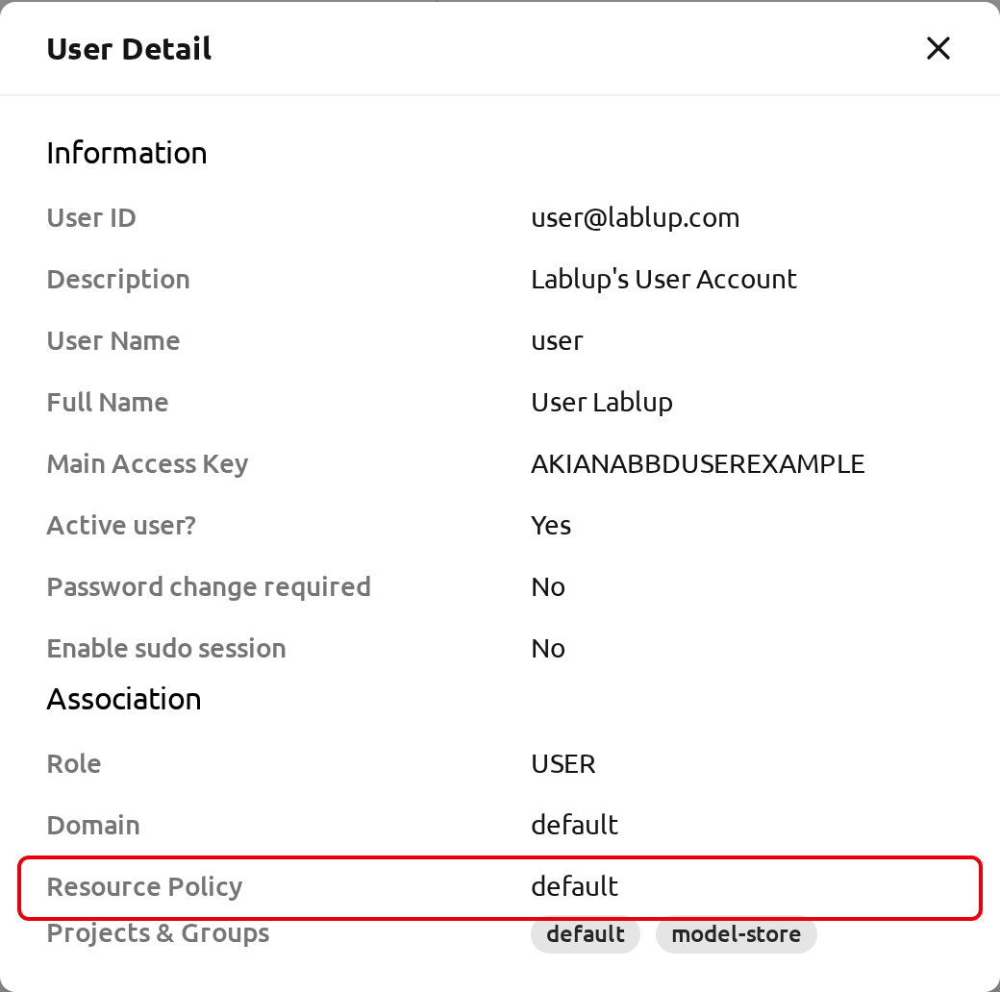
The keypair resource policy table lists the following columns. Two of them describe how the policy is applied rather than what it limits:
- Name: The policy name. The cell also exposes the inline Info, Edit, and Delete actions.
- Default For Unspecified: How the policy behaves when a session requests no explicit CPU or memory.
UNLIMITEDallows usage up to the agent node's capacity, whileLIMITEDdenies resources unless they are set explicitly. In most casesUNLIMITEDis recommended. Hover the question mark in the column header for the same explanation in the UI. - Resource Policy: The resource slots the policy grants.
- Concurrent Sessions, Cluster Size, Idle Timeout, Max Session Lifetime, Storage Nodes, Max Pending Session Count, Max Concurrent SFTP Sessions: The individual limits described below.
- Max Pending Session Resource Slots: The resource slots the policy allows for sessions waiting in the
PENDINGstatus, shown per resource type (∞when unlimited). This column is read-only in the WebUI — the resource policy dialog does not expose the field. - Created At: The timestamp when the policy was created.
You can use the table's property filter, sorting, and pagination controls to find the policies you need.
To change a resource policy, click the Edit (pencil) action in the Name column of the policy. In the Edit Keypair Resource Policy dialog, every option is editable except for the policy name, which serves as the primary key for distinguishing resource policies in the list. Uncheck the Unlimited checkbox at the bottom of CPU, RAM, and fGPU, and set the resource limits to the desired values. Ensure that the allocated resources are less than the total hardware capacity. In this case, set CPU, RAM, and fGPU to 2, 4, and 1 respectively. Click Save to apply the changed resource policy.
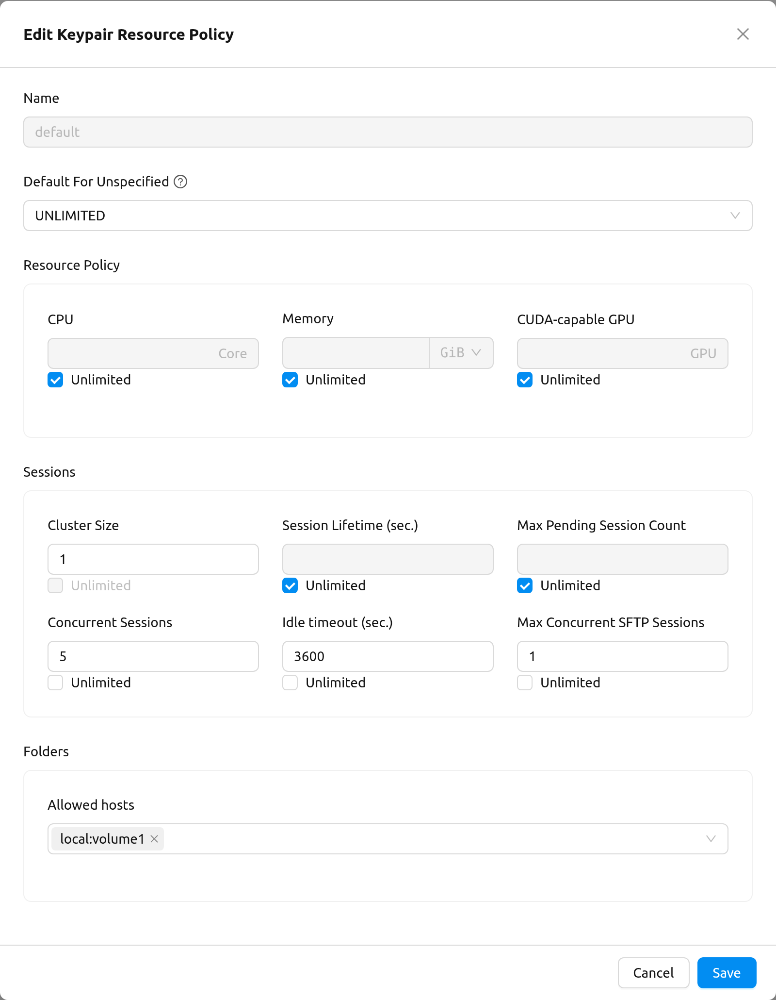
About details of each option in resource policy dialog, see the description below.
Resource Policy
- CPU: Specify the maximum amount of CPU cores. (max value: 512)
- Memory: Specify the maximum amount of memory in GB. It would be good practice to set memory twice as large as the maximum value of GPU memory. (max value: 1024)
- CUDA-capable GPU: Specify the maximum amount of physical GPUs. If fractional GPU is enabled by the server, this setting has no effect. (max value: 64)
- CUDA-capable GPU (fractional): Fractional GPU (fGPU) is literally split a single GPU to multiple partitions in order to use GPU efficiently. Notice that the minimum amount of fGPU required is differed by each image. If fractional GPU is not enabled by the server, this settings has no effect. (max value: 256)
Sessions
- Cluster Size: Set the maximum limit for the number of multi-containers or multi-nodes that can be configured when creating a session.
- Session Lifetime (sec.): Limits the maximum lifetime of a compute session
from the reservation in the active status, including
PENDINGandRUNNINGstatuses. After this time, the session will be force-terminated even if it is fully utilized. This will be useful to prevent the session from running indefinitely. - Max Pending Session Count: Maximum number of compute sessions that can be in
the
PENDINGstatus simultaneously. - Concurrent Sessions: Maximum number of concurrent compute session per keypair. If this value is set to 3, for example, users bound to this resource policy cannot create more than 3 compute sessions simultaneously. (max value: 100)
- Idle timeout (sec.): Configurable period of time during which the user can leave their session untouched. If there is no activity at all on a compute session for idle timeout, the session will be garbage collected and destroyed automatically. The criteria of the "idleness" can be various and set by the administrators. (max value: 15552000 (approx. 180 days))
- Max Concurrent SFTP Sessions: Maximum number of concurrent SFTP sessions.
Folders
- Allowed hosts: Backend.AI supports many NFS mountpoint. This field limits the accessibility to them. Even if a NFS named "data-1" is mounted on Backend.AI, users cannot access it unless it is allowed by resource policy.
- (Deprecated) Max. #: the maximum number of storage folders that can be created/invited. (max value: 100).
In the keypair resource policy list, check that the Resources value of the default policy has been updated.
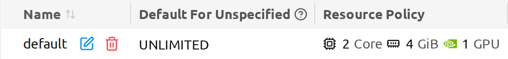
You can create a new resource policy by clicking the Create button at the top right of the table. Each setting value is the same as described above.
To create a resource policy and associate it with a keypair, go to the Credentials tab of the Users page, click the Edit (pencil) action located in the Name column of the desired keypair, and click the Select Policy field to choose it.
When selecting a keypair resource policy for a specific user, the selection table includes an Assigned Keypairs column that shows which of the user's keypairs are currently bound to each policy, so you can confirm the user's existing assignments before choosing a policy.
You can also delete each of resource keypairs by clicking trash can icon
in the Name column. When you click the icon, a confirmation dialog appears. Type the
policy name in the confirmation field, then click the Delete button to erase.
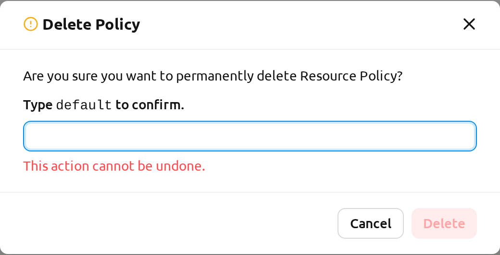
If there's any users (including inactive users) following a resource policy to be deleted, deletion may not be done. Before deleting a resource policy, please make sure that no users remain under the resource policy.
If you want to hide or show specific columns, click the Setting (Gear) at the bottom right of the
table. This will bring up a dialog where you can select the columns you want to display.
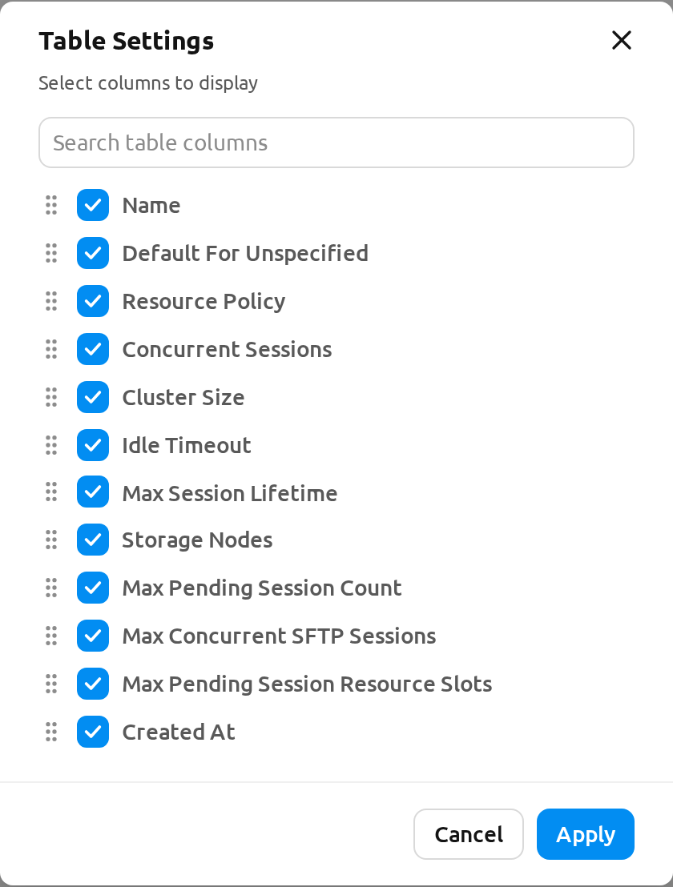
User resource policy#
Backend.AI supports user resource policy management. While each user can have multiple keypairs, a user can only have one user resource policy. In the user resource policy page, users can set restrictions on various settings related to folders such as Max Folder Count and Max Folder Size, as well as individual resource limits like Max Session Count Per Model Session and Max Customized Image Count.
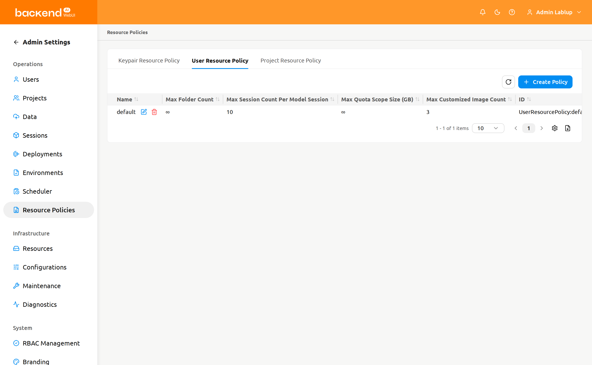
The table shows the following columns: ID, Name (with the inline Edit and Delete actions), Max Folder Count, Max Quota Scope Size, Max Customized Image Count, and Created At. Use the column-settings control to hide the columns you do not need; your choice is kept per browser.
Sorting and paging are evaluated on the server, so the tab stays responsive on clusters with many policies. Click a column header to change the sort order, and use the pager below the table to move through the results.
To create a new user resource policy, click the Create button.
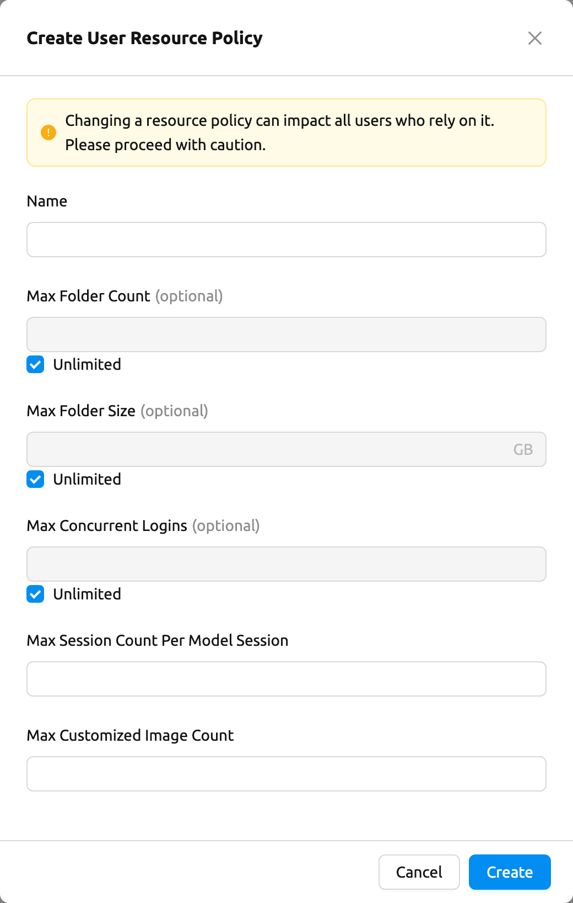
- Name: The name of the user resource policy.
- Max Folder Count: The maximum number of folders that the user can create. If the user's folder count exceeds this value, user cannot create a new folder. If set to Unlimited, it is displayed as "∞".
- Max Folder Size: The maximum size of the user's storage space. If user's storage space exceeds this value, user cannot create a new data folder. If set to Unlimited, it is displayed as "∞". In the list this limit appears as Max Quota Scope Size, shown with the unit that fits the configured value.
- Max Concurrent Logins: The maximum number of concurrent login sessions allowed for the user. If set to Unlimited, it is displayed as "∞".
- Max Session Count Per Model Session: The maximum number of available sessions per model service created by a user. Increasing this value can put a heavy load on the session scheduler and potentially lead to system downtime, so please caution when adjusting this setting.
- Max Customized Image Count: The maximum number of customized images that user can create. If user's customized image count exceeds this value, user cannot create a new customized image. If you want to know more about customized images, please refer to the My Environments section.
To change an existing policy, click the Edit (pencil) action in the Name column; the dialog is titled Edit User Resource Policy and its submit button reads Save. To delete one, click the Delete (trash can) action.
Changing a resource policy may affect all users who use that policy, so use it with caution.
Similar to keypair resource policy, users can select and display only columns users want by
clicking the Setting (Gear) button at the bottom right of the table.
Project resource policy#
Backend.AI supports project resource policy management. Project resource policies manage storage space (quota) and folder-related limitations for projects.
When clicking the Project tab of the Resource Policies page, you can see the list of project
resource policy.
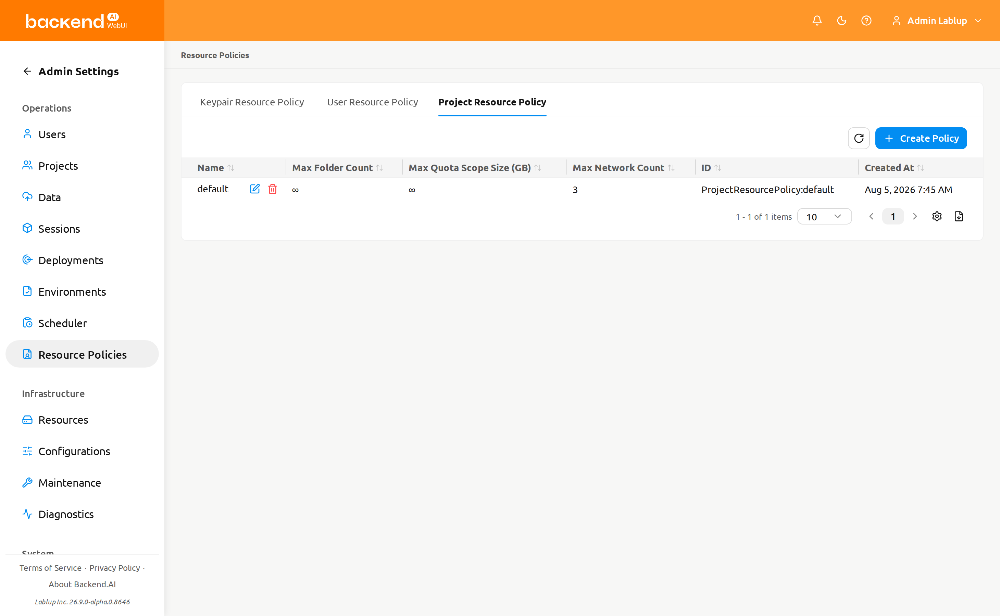
In the project resource policy table, you can review the policy list and use the inline Edit and Delete actions for each item. You can also use the table's property filter, sorting, and pagination controls to find policies quickly.
To create a new project resource policy, click the Create button at the top right of the table.
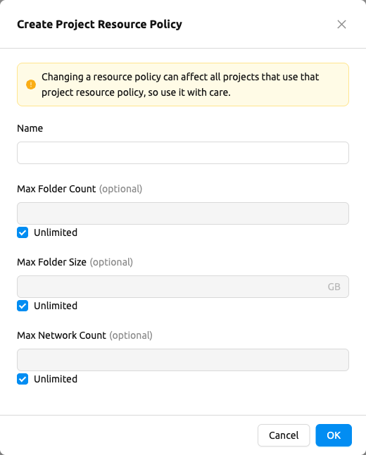
- Name: The name of the project resource policy.
- Max Folder Count: The maximum number of project folders that an administrator can create. If the project folder count exceeds this value, the administrator will not be able to create a new project folder. If set to Unlimited, it will be displayed as "∞".
- Max Folder Size: The maximum size of the project's storage space. If the project's storage space exceeds this value, the administrator cannot create a new project folder. If set to Unlimited, it is displayed as "∞".
- Max Network Count: The maximum number of networks that can be created for the project. If set to Unlimited, it is displayed as "∞".
The meaning of each field is similar to the user resource policy. The difference is that the project resource policy is applied to the project folders, while the user resource policy is applied to the user folders.
If you want to make changes, click the Edit (pencil) action in the Name column; the dialog is titled Edit Project Resource Policy and its submit button reads Save. Resource policy names cannot be edited. Deletion can be done by clicking the Delete (trash can) action.
Changing a resource policy may affect all users who use that policy, so use it with caution.
You can select and display only the columns you want by clicking the Setting (Gear) button at the
bottom right of the table.
Unified view for pending sessions#
The Admin Session page has two tabs. Sessions lists every compute session in the cluster, and Pending Sessions provides a unified view of all pending sessions within a selected resource group. The index number displayed next to the status indicates the queue position in which the session will be created once sufficient resources become available.
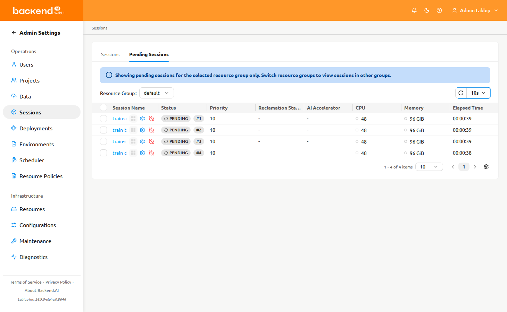
Similar to the Session page, you can click the session name to open a drawer that displays detailed information about the session.
The pending session list also shows each session's Priority, which orders the pending queue. To
change it, click the Settings (gear) action on a session row, or select one or more pending
sessions with the checkboxes and click the Settings button above the list. Either way, the
Session Settings dialog opens; set Priority to a value between 0 and 100 and click Save. A
message confirms that the session priority has been successfully updated. Priority can only be changed
while a session is in the PENDING status.
The Priority column and the priority editing actions are shown only when the Backend.AI Manager is version 26.4.0 or later.
On the Sessions tab, the property filter offers the following conditions:
- Project: Choose the project from a searchable dropdown of the projects on this cluster. Because the project is picked from the list, you do not have to look up its identifier; the resulting filter tag shows the project's name.
- Session Name, Resource Group, Agent, Owner Email: Narrow the list by text match.
When the experimental Session resource grid view feature is enabled in User Settings (refer to the Experimental features section), the Sessions tab shows a View mode control next to the refresh button that switches between Table and Grid. The grid displays one cell per session, colored by that session's live resource utilization. For a description of the grid's own controls, refer to the Session List View section.
Fair share scheduler#
The Fair Share Scheduler page is available in the Admin Settings menu. This feature allows administrators to manage fair share scheduling weights across a hierarchical structure of resource groups, domains, projects, and users.
Fair share scheduling allocates compute resources based on historical usage patterns, ensuring that resources are distributed fairly among users. Users who have consumed fewer resources in the past receive higher scheduling priority, while those who have used more resources are given lower priority. Administrators can fine-tune this behavior by adjusting weights at each level of the hierarchy.
The Fair Share Scheduler is only available when a resource group's scheduler type is set
to FAIR_SHARE. To configure the scheduler type for a resource group, refer to the
Manage resource group section.
To access this feature, click the Scheduler menu item under Admin Settings in the sidebar. The page displays a Fair Share Setting tab with a 4-step drill-down interface.
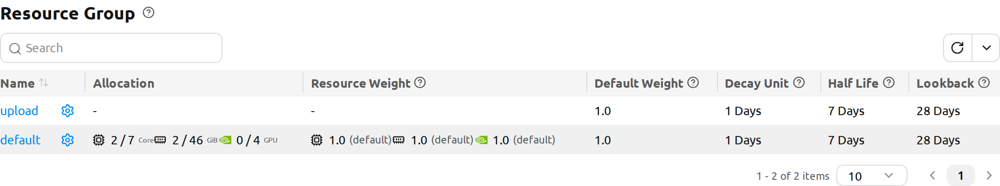
The page is organized into four hierarchical steps:
- Resource Group: Configure core fair share parameters for each resource group
- Domain: Set weights for domains within a resource group
- Project: Set weights for projects within a domain
- User: Set weights for individual users within a project
A step indicator bar at the top of the page shows your current position in the hierarchy. Completed steps display the name of the selected item. You can click on any completed step to navigate back to that level.
If the selected resource group does not have its scheduler type set to FAIR_SHARE, a
warning alert is displayed indicating that the Fair Share Scheduler is not enabled for that
resource group.
The page also warns when the entity you are looking at cannot actually use the resource group you drilled into. Because the check is made against the domain or project you selected on the way down, the warning follows your current position in the hierarchy instead of reflecting a stale selection:
- On the Domain step, a warning icon appears next to any domain for which the selected resource group is not allowed. Hovering the icon explains that the group may still be allowed in the domain's sub-projects.
- On the Project step, the same icon marks projects for which the selected resource group is not allowed.
- On the User step, a warning states that users under the selected project cannot use the selected resource group.
The matching alert is repeated inside the weight setting modal, so the mismatch is visible at the moment you edit a weight rather than only in the table.
At each step, the following common features are available:
- Pagination: Navigate through results with configurable page size.
Resource group#
The Resource Group step displays a table of all resource groups with their fair share configuration.
The table includes the following columns:
- Name: The resource group name. Click the name to drill into the domain-level settings for that resource group.
- Control: A settings (gear) button that opens the Resource Group Fair Share Settings modal.
- Allocation: Resource usage showing used/capacity for each resource type allocated to the resource group (e.g., CPU, Memory, CUDA GPU).
- Resource Weight: Per-resource-type weights. Displays "default" if using the default weight.
- Default Weight: The fallback weight value for domains, projects, and users without a specified weight.
- Decay Unit: The period (in days) for aggregating usage.
- Half Life: The period (in days) over which the usage reflection rate decreases by half.
- Lookback: The range (in days) of usage history reflected in calculations.
Resource group fair share settings#
Click the settings (gear) button in the Control column of a resource group to open the Fair Share Settings modal.
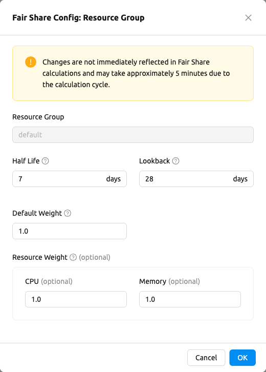
Changes are not immediately reflected in Fair Share calculations and may take approximately 5 minutes due to the calculation cycle.
The modal contains the following fields:
- Resource Group: Read-only field showing the resource group name.
- Half Life: The period over which the usage reflection rate decreases by half, specified in days (minimum 1). For example, if set to 7 days, usage from 7 days ago is calculated at 50%, and usage from 14 days ago at 25%. It is recommended to set this as a multiple of the decay unit.
- Lookback: The range of usage history reflected in Fair Share calculations, specified in days (minimum 1). Usage prior to this period is excluded from calculations. It is recommended to set this as a multiple of the half life.
- Default Weight: The default value applied to domains, projects, and users without a specified weight (minimum 1, step 0.1).
- Resource Weights: Per-resource-type weights (e.g., CPU, Memory, GPU), each with a minimum value of 1 and step 0.1. This section is only displayed if resource weights exist for the resource group.
Domain#
After selecting a resource group, the Domain step displays a table of domains with their fair share weights and usage within that resource group.
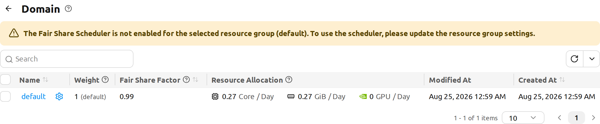
The table includes the following columns:
- Name: The domain name. Click the name to drill into project-level settings for that domain.
- Control: A settings (gear) button that opens the weight setting modal for this domain.
- Weight: The current weight value. Displays "default" if using the default weight.
- Fair Share Factor: The scheduling priority calculated by the scheduler. Higher values indicate higher priority.
- Resource Allocation: Average daily decayed resource usage per resource type (CPU, Memory, GPU / Day).
- Modified At: The last modification timestamp.
- Created At: The creation timestamp.
You can select multiple rows using the checkboxes on the left side of the table. When rows are selected, two additional buttons appear:
- Usage Graph (chart icon): Opens the Usage History modal for the selected items.
- Bulk Edit (gear icon): Opens the weight setting modal to edit weights for all selected items at once.
Project#
After selecting a domain, the Project step displays a table of projects with the same column structure as the Domain step. Click a project name to drill into the User step.
The same bulk operations (Usage Graph and Bulk Edit) are available when rows are selected.
User#
After selecting a project, the User step displays a table of individual users with their fair share weights and usage.
The table includes the following columns:
- Email: The user's email address.
- Name: The user's name.
- Control: A settings (gear) button that opens the weight setting modal for this user.
- Weight: The current weight value. Displays "default" if using the default weight.
- Fair Share Factor: The scheduling priority calculated by the scheduler.
- Resource Allocation: Average daily decayed resource usage per resource type.
- Modified At: The last modification timestamp.
- Created At: The creation timestamp.
The same bulk operations (Usage Graph and Bulk Edit) are available when rows are selected.
Editing fair share weights#
To edit the fair share weight for a domain, project, or user, click the settings (gear) button in the Control column of the desired row. This opens the weight setting modal.
Changes are not immediately reflected in Fair Share calculations and may take approximately 5 minutes due to the calculation cycle.
In single-edit mode, the modal displays the entity name (read-only) and a weight input field.
- Weight: The multiplier that determines Fair Share scheduling priority. Higher weight results in higher priority. The default value is "1.0". A weight of "2.0" has twice the priority of "1.0". The minimum value is 1 with a step of 0.1.
To edit weights for multiple items at once, select the desired rows using the checkboxes in the table, then click the Bulk Edit (gear icon) button. In bulk-edit mode, the modal displays a tag list of all selected entities and a single weight input that will be applied to all of them.
If the selected resource group does not have its scheduler type set to FAIR_SHARE,
a warning alert is displayed in the modal.
Viewing usage history#
To view the usage history for domains, projects, or users, select the desired rows using the checkboxes in the table, then click the Usage Graph (chart icon) button. This opens the Usage History modal.
The modal displays the following:
- Date range picker: Select a date range for the usage history. Presets are available for Last 7 Days, Last 30 Days, and Last 90 Days.
- Refresh button: Manually refresh the usage data.
- Context information: Shows the resource group, domain, and project (depending on the current step).
- Selected entities: Displayed as tags showing the names of the selected items.
- Usage chart: A chart showing the average daily resource usage over the selected period.
Manage images#
Admins can manage images, which are used in creating a compute session, in the
Images tab of the Environments page. In the tab, meta information of all images
currently in the Backend.AI server is displayed. You can check information such
as registry, architecture, namespace, image name, digest, and minimum
resources required for each image. For images downloaded to one or more agent
nodes, there will be an installed tag in the Status column. Private images
additionally show a Private tag in the Status column, and a private image
cannot be selected in the session launcher even when it is installed.
The feature to install images by selecting specific agents is currently under development.
The image list displays additional columns for more detailed image information:
- Architecture: The CPU architecture of the image (e.g., x86_64, aarch64).
- Namespace: The namespace of the image within the registry.
- Base Image Name: The base name of the image, with alias tags for easier identification.
- Version: The version tag of the image.
- Tags: Detailed tags associated with the image, displayed as double tags with aliases.
You can select multiple uninstalled images and click the Install Image button to install them in bulk. Installing an image enqueues a short-lived session that pulls the image, so the dialog asks where that session runs:
- Install Session Project: The project the install session runs in. The session is created in this project as your own session, so only projects you belong to are listed.
- Target Resource Group: The resource group the image is pulled into. Only resource groups accessible from the selected project are listed.
Both fields are required, and the dialog's own button — which reads Install — stays disabled until you have chosen a project and a resource group. Images in your selection that are already installed are excluded from the request.
You can change the minimum resource requirements for each image by clicking the
Edit (pencil) action in the Controls panel, which opens the
Edit Minimum Image Resource Limit dialog. Each image has hardware and resource
requirements for minimal operation. (For example, for GPU-only images, there
must be a minimum allocated GPU.) The default value for the minimum resource
amount is provided as embedded in the image's metadata. If an attempt is made to
create a compute session with a resource that is less than the amount of
resources specified in each image, the request is automatically adjusted to the
minimum resource requirements for the image and then generated, not cancelled.
The minimum resource requirements included in the image metadata are values that have been tested and determined, so unless you have a clear reason to change the minimum resource amounts, it is recommended to keep the default values.
Additionally, you can add or modify the supported apps for each image by clicking the Apps icon located in the Controls column.
Once you click the icon, the name of the app and its corresponding port number will be displayed accordingly.
In this interface, you can add supported custom applications by clicking the + Add button below. To delete an application, simply click the trash can button on the right side of each row.
Manage docker registry#
You can click on the Registries tab in Environments page to see the information
of the docker registry that are currently connected. cr.backend.ai is
registered by default, and it is a registry provided by Harbor.
In the offline environment, the default registry is not accessible, so click the trash icon on the right to delete it.
Click the refresh icon in Controls to update image metadata for Backend.AI from the connected registry. Image information which does not have labels for Backend.AI among the images stored in the registry is not updated.
You can add your own private docker registry by clicking the Add Registry button. The registry creation dialog contains the following fields:
- Registry Name: A unique name for the registry (up to 50 characters). Must match the prefix used in image names stored in the registry.
- Registry URL: The URL of the registry. A scheme such as
http://orhttps://must be explicitly included. - Username: Optional. Fill in if you have separate authentication settings in the registry.
- Password: Optional. When editing an existing registry, check the "Change Password" checkbox to modify it.
- Registry Type: Select the type of registry. Supported types include:
docker,harbor,harbor2,github,gitlab,ecr, andecr-public. - Project Name: The project or namespace in the registry (required). Use the full path including namespace and project name for GitLab registries.
- Extra Information: A JSON string for additional configuration needed for each registry type.
- SSL Verification: Toggles whether Backend.AI verifies the registry's SSL certificate when connecting. Enabled by default, which is the recommended setting for any registry reachable over the public internet. Disable this only for a registry served with a self-signed certificate inside a trusted internal environment where you have already verified the network path; turning it off makes the connection vulnerable to man-in-the-middle attacks.
- Set as Global Registry: A toggle that, when enabled, allows access to the registry from all projects.
- Allowed Projects: When Set as Global Registry is turned off, use this field to select the specific projects that are allowed to use the registry.
GitLab container registry configuration#
When adding a GitLab container registry, you must specify the api_endpoint
in the Extra Information field. This is required because GitLab uses separate
endpoints for the container registry and the GitLab API.
For GitLab.com (public instance):
- Registry URL:
https://registry.gitlab.com - Extra Information:
{"api_endpoint": "https://gitlab.com"}
For self-hosted (on-premise) GitLab:
- Registry URL: Your GitLab registry URL (e.g.,
https://registry.example.com) - Extra Information:
{"api_endpoint": "https://gitlab.example.com"}
The api_endpoint should point to your GitLab instance URL, not the registry URL.
Additional configuration notes:
Project path format: When specifying the project, use the full path including namespace and project name (e.g.,
namespace/project-name). Both components are required for the registry to function correctly.Access token permissions: The access token used for the registry must have both
read_registryandread_apiscopes. Theread_apiscope is required for Backend.AI to query the GitLab API for image metadata during rescan operations.
You can also change the settings of an existing registry, except the Registry Name, from the Edit Registry dialog.
After creating a registry and updating the image metadata, users still cannot use the images immediately. You must enable the registry by toggling the Enabled switch in the registry list to allow users to access images from the registry.
Manage resource preset#
The following predefined resource presets are displayed in the Resource allocation panel when creating a compute session. Superadmin can manage these resource presets.
Go to the Resource Presets tab on the Environment page. You can check the list of currently defined resource presets.
You can set resources such as CPU, RAM, fGPU, etc. to be provided by the resource preset by clicking the Edit (pencil) action in the Name column. The Create Resource Preset / Edit Resource Preset modal shows fields of the resources currently available. Depending on your server's settings, certain resources may not be visible. After setting the resources with the desired values, click Save and check if the corresponding preset is displayed when creating a compute session. If available resources are less than the amount of resources defined in the preset, the corresponding preset would not be shown.
The resource preset dialog includes:
- Preset Name: A unique name for the preset (only alphanumeric characters, periods, hyphens, and underscores allowed).
- Resource Group: Associate the preset with a specific resource group. This field is optional — leave it empty (or clear it) to keep the preset global, so it applies regardless of the resource group.
- Resource Preset: Dynamic fields for each available resource type (CPU, Memory, GPU, etc.). Memory fields support dynamic unit input (
MiB,GiB,TiB,PiB). - Shared Memory: The amount of shared memory allocated for the preset. This value must be less than the Memory value.
You can also create a resource preset by clicking the Create Preset button in the right top of the Resource Presets tab. Resource preset names must still be unique. If you enter a name that already exists, the server rejects the request when you click Create and an error message is displayed.
Manage agent nodes#
Superadmins can view the list of agent nodes, currently connected to Backend.AI, by visiting the Resources page. You can check agent node's IP, connecting time, actual resources currently in use, etc. From the agent's detail drawer you can also change its schedulable status and control the agent service itself.
Query agent nodes#
Use the Connected / Terminated selector to switch between agents that are currently connected and agents that have been connected once and then terminated or disconnected. The Terminated list can be used as a reference for node management; if it is empty, then no disconnection or termination has occurred.
You can narrow the list with the property filter, which supports ID, Endpoint, and Schedulable.
Click an agent's ID to open the Agent Info drawer, which shows the exact resource usage for that node. The drawer has two tabs: Resources, which breaks the usage down per resource slot, and Sessions, which lists the compute sessions assigned to this agent so you can see what is running on the node before stopping or restarting it. On the Sessions tab, use the Running / Finished selector to switch between sessions that still occupy the node's resources and sessions that have already finished, and click a session name to open its detail view on the Admin Session page.
Start, stop, or restart an agent#
The Agent Info drawer holds a group of action buttons for the agent service itself:
- Start Agent: Brings the agent service back up. Available only while the agent is not
ALIVE. - Stop Agent: Shuts the agent service down. Available only while the agent is
ALIVE. - Restart Agent: Restarts the agent service.
Each action opens a confirmation dialog that names the affected agent and warns that running sessions on this agent may be affected. Confirm to send the request; a message reports that the start, stop, or restart has been requested, and the agent's status is re-read afterwards.
These actions act on the agent service on the node, not on a single session. Stopping or restarting an agent affects every compute session currently running on it. Make sure the node is drained — or that you accept the impact — before confirming.
The request is relayed to the agent's watcher daemon. If the watcher is unreachable, or the node is not managed in a way that allows the operation, the WebUI reports the failure returned by the agent instead of the success message.
Set schedulable status of agent nodes#
You may want to prevent new compute sessions from being scheduled to an Agent service without stopping it. In this case, you can disable the Schedulable status of the Agent from the Settings button in the Agent Info drawer. Then, you can block the creation of a new session while preserving the existing sessions on the Agent.
Manage resource group#
Agents can be grouped into units called resource groups. For example, let's say there are 3 agents with V100 GPUs and 2 agents with P100 GPUs. You want to expose two types of GPUs to users separately, then you can group three V100 agents into one resource group, and the remaining two P100 agents into another resource group.
Adding a specific agent to a specific resource group is not currently handled in the WebUI, and it can be done by editing agent config file from the installation location and restart the agent daemon. Management of the resource groups is possible in Resource Group tab of the Resource page.
You can edit a resource group by clicking the Edit (pencil) action in the Name column, which opens
the Edit Resource Group dialog. In the Scheduler field, you can choose the scheduling method for
creating a compute session. Currently, there are four types: FIFO, LIFO,
DRF, and FAIR_SHARE. FIFO and LIFO are scheduling methods creating the first- or the
last-enqueued compute session in the job queue. DRF stands for Dominant Resource
Fairness, and it aims to provide resources as fair as possible for each user.
FAIR_SHARE allocates compute resources based on historical usage patterns. For
more details, refer to the Fair Share Scheduler section.
You can deactivate a resource group by turning off Active. Click Save to apply your changes.
The resource group edit dialog contains the following additional fields:
- Allowed session types: Since users can choose the type of session, the resource group can allow certain types. You should allow at least one session type. The allowed session types are Interactive, Batch, Inference, and System.
- App Proxy Server Address: Sets the App Proxy address for the resource group's Agents to use. If you set a URL in this field, App Proxy will relay the traffic of an app like Jupyter directly to the compute session via Agent bypassing Manager.
- App Proxy API Token: The API token for authenticating with the App Proxy server.
- SFTP Storage Proxies: The storage proxies used when users in this resource group transfer files to their folders over SFTP. The field is available to superadmins and is pre-filled with the proxies that currently serve this resource group. Saving synchronizes only this group's membership — it is added to the proxies you selected and removed from the ones you cleared, and every other resource group on those proxies is left untouched. When no proxy is selected for a group, that group is not restricted to a particular proxy.
- Active: Toggle the active status of the resource group.
- Public: When enabled, the resource group is visible to all users.
- Pending timeout:
A compute session will be canceled if it stays
PENDINGstatus for longer than the Pending timeout. When you wish to prevent a session from remaining PENDING indefinitely, set this time. Set this value to zero (0) if you do not want to apply the pending timeout feature. - Retries to skip pending session:
The number of retries the scheduler tries before skipping a PENDING session.
It can be configured to prevent the situation where one PENDING session blocks
the scheduling of the subsequent sessions indefinitely (Head-of-line blocking,
HOL). If no value is specified, the global value in Etcd will be used (
num retries to skip, default three times).
You can create a new resource group by clicking the Create Resource Group button. Likewise other creating options, you cannot create a resource group with the name that already exists, since name is the key value.
Edit several resource groups at once#
Settings that apply the same way to a set of resource groups can be changed in one pass:
- Select the resource groups with the row checkboxes. (The checkboxes are available to superadmins.)
- A selection count appears in the toolbar. Click the Bulk Edit (gear) button next to it.
- The Bulk Edit Resource Groups dialog opens.
An alert at the top of the dialog lists every resource group that will be changed. Below it sits the SFTP Storage Proxies field, pre-filled with the union of the proxies that already serve any of the selected groups.
- Selecting a proxy puts every selected resource group on that proxy.
- Clearing a proxy removes the selected resource groups from it. Because this takes SFTP access away, the dialog asks you to confirm before the change is applied, naming the proxies involved.
Resource groups you did not select keep their existing proxy assignments in either case.
Storages#
On STORAGES tab, you can see what kind of mount volumes (usually NFS) exist. Backend.AI provides per-user/per-project quota setting on storage that supports quota management. By using this feature, admin can easily manage and monitor the exact amount of storage usage for each user and project based folder.
To manage a storage host, click the storage host name in the Storages list. This opens the Storage Host Detail Drawer, where capacity (quota) and folder permissions are configured.
Storage host detail drawer#
The Storage Host Detail Drawer is the single place to inspect and manage a storage host. You can open it by clicking the host name in the Storages list. The top displays basic information about the host, while the bottom provides tabs for configuring folder permissions and capacity (quota).
The drawer contains the following tabs:
- Project Folder Permissions: View and manage which domains and projects can access the host's project folders. See the Project Folder Permissions section below.
- User Folder Permissions: View and manage the permissions that apply to user folders on the host. User folder permissions are determined by the keypair resource policy linked to a user's main access key.
- Capacity: Configure per-user and per-project storage quotas, and view the host's usage and capabilities. This tab is unavailable for storage hosts that do not support quota configuration.
Project folder permissions#
The Project Folder Permissions tab of the Storage Host Detail Drawer lets administrators view and manage the permissions of the project folders created on the selected storage host.
Project folder permissions consist of permissions for the selected domain and permissions for the projects under that domain.
In the Backend.AI structure, a project belongs under a specific domain. Therefore, the storage permissions set on a project inherit the domain's permissions by default.
You can select multiple rows (using the row checkboxes) in the Domains, Projects, or User Folder Permissions tables to compare their permission sets side by side. With rows selected, click Edit Permissions to open the bulk edit modal, which applies the chosen permission set to all selected entities at once. The modal opens with all permissions selected by default, and saving overwrites the selected entities' permissions with exactly the set you choose.
User folder permissions#
User folder permissions are the permissions configured in the keypair resource policy. To narrow the list to one person, add a User condition in the filter bar above the table: the value is a searchable dropdown of user accounts rather than a free-text box, so you pick the account instead of typing an address. Only the keypair resource policies assigned to that user's keypairs are then shown, and the resulting filter tag displays the user's email address. The Assigned Keypairs column shows the user's main access key; it is only shown while a user is selected. Picking another user replaces the existing condition instead of adding a second one.
Quota settings#
Please remind that quota setting is only available in storage that provides quota setting (e.g. XFS, CephFS, NetApp, Purestorage, etc.). Although you can see the usage of storage in the Capacity tab regardless of storage, you cannot configure the quota which doesn't support quota configuration internally.
Set user quota#
In Backend.AI, there are two types of vfolders created by user and admin(project). In this section,
we would like to show how to check current quota setting per-user and how to configure it.
First, on the Capacity tab, make sure the active sub-tab of the Quota Settings panel is For User. Then, select user you desire to
check and edit the quota. You can see the quota id that corresponds to user's id and the configuration already set
in the table, if you already set the quota.
Click the Edit button in the Quota Scope ID column to open the modal for configuring the quota.
Set project quota#
Setting a quota on project-folder is similar to setting a user quota. The difference between setting project quota and user quota is to confirm setting the project quota requires one more procedure, which is selecting the domain that the project is dependent on. The rest are the same. As in the picture below, you need to first select the domain, and then select the project.
Unset quota#
We also provides the feature to unset the quota. Please remind that after removing the quota setting, quota will automatically follows
user or project default quota, which cannot be set in WebUI. If you want to change the default quota setting, you may need to access to admin-only page.
By Clicking Unset button in the Quota Scope ID column, the small snackbar message will show up and confirm whether you really want to delete the current quota setting.
If you click OK button in the snackbar message, then it will delete the quota setting and automatically reset the quota follows to corresponding quota,
which depends on the quota type(user / project).
If there's no config per user/project, then corresponding values in the user/project resource policy will be set as
a default value. For example, If no hard limit value for quota is set, max_vfolder_size value in the resource policy
is used as the default value.
System settings#
In the Configurations page, you can see main settings of Backend.AI server. Currently, it provides several controls which can change and list settings.
You can change image auto install and update rule by selecting one option from
Digest, Tag, None. Digest is kind of checksum for the image which
verifies integrity of the image and also enhances efficiency in downloading images
by reusing duplicated layers. Tag is only for developing option since it does not
guarantee the Integrity of the image.
Don't change rule selection unless you completely understand the meaning of each rule.
The Configurations page also displays the status of plugins and enterprise features:
Plugins:
- Open Source CUDA GPU support: Status of CUDA GPU support.
- ROCm GPU support: Status of ROCm GPU support.
Enterprise Features:
- Fractional GPU: Fractional GPU (fGPU) virtualization for sharing GPUs across sessions.
Backend.AI supports a wide range of AI accelerators across multiple vendors:
- NVIDIA
- Spark (GB10)
- Blackwell (B300, B200, RTX PRO 6000, etc.)
- Hopper (H200, H100 NVL, etc.)
- Grace Superchip (GB300, GB200, GH200, etc.)
- Turing (Titan RTX, RTX 8000, T4)
- Ampere (A100, A40, A10, etc.)
- Ada Lovelace (L40S, L4)
- Jetson (TX, Xavier, Orin, Thor, etc.)
- Intel
- Gaudi 3
- Gaudi 2
- Gaudi 1
- Arc
- AMD
- Instinct MI Series (including MI300X)
- MI300A
- MI250
- Rebellions
- ATOM Max
- ATOM+
- REBEL
- FuriosaAI
- RNGD
- Tenstorrent
- Wormhole n150s
- Wormhole n300s
- Google
- TPU v7 (Ironwood)
- Coral TPU v5p
- Coral TPU v5e
- TPU v4
- Graphcore
- C600 IPU
- Bow IPU
- HyperAccel
- LPU
- Groq
- LPU
- Cerebras
- WSE-3
When a user launches a multi-node cluster session, Backend.AI will dynamically create an overlay network to support private inter-node communication. Admins can set the value of the Maximum Transmission Unit (MTU) for the overlay network, if it is certain that the value will enhance the network speed.
For more information about Backend.AI Cluster session, please refer to Backend.AI Cluster Compute Session section.
You can edit the configuration per job scheduler by clicking the Scheduler's config button. The values in the scheduler setting are the defaults to use when there is no scheduler setting in each resource group. If there is a resource group-specific setting, this value will be ignored.
Currently supported scheduling methods include FIFO, LIFO, and DRF.
Each method of scheduling is exactly the same as the scheduling methods above.
Scheduler options include session creation retries. Session creation retries refers to the number
of retries to create a session if it fails. If the session cannot be created within the trials,
the request will be ignored and Backend.AI will process the next request. Currently, changes are
only possible when the scheduler is FIFO.
We will continue to add broader range of setting controls.
System settings are default settings. If resource group has certain value, then it overrides configured value in system settings.
Server management#
Go to the Maintenance page and you will see the server management actions, grouped by purpose. A search bar at the top of the page filters the list when you are looking for a specific entry.
Fix
- Match usage database with current state: Occasionally, due to unstable network connections or container management problem of Docker daemon, there may be a case where the resource occupied by Backend.AI does not match the resource actually used by the container. In this case, click Recalculate Usage to manually correct the resource occupancy.
Images / Environment
- Rescan image list from repository: Click Rescan Images to update image meta information from all registered Docker registries. It can be used when a new image is pushed to a Backend.AI-connected docker registry. The scan can take a long time; progress is reported in the notification area.
Announcement
- System announcement: Click Edit Announcement to create or change the announcement banner shown to every user at the top of every page. See the System announcement section below.
We will continue to add other settings needed for management, such as removing unused images or registering periodic maintenance schedules.
System announcement#
Superadmins can publish a short message that every user sees as a banner at the top of every page — for example, a planned maintenance window. The announcement is written in Markdown and is managed entirely from the WebUI, whether or not one has been published before.
Open the editor in either of two ways:
- From the Maintenance page, click Edit Announcement in the System announcement row. This works even when no announcement exists yet, so it is the way to publish the first one.
- From the announcement banner itself, when one is already published. Because the banner sits at the top of every page, a superadmin can open the editor from anywhere in the WebUI.
The Edit Announcement dialog is split into two panes:
- Message: A Markdown editor with a formatting toolbar. The toolbar provides Heading (H1–H3), Bold, Italic, Strikethrough, Quote, Code, Link, Image, Bullet List, and Numbered List. Each button applies to the current selection, or inserts a placeholder you can type over.
- Preview: A live rendering of the message exactly as users will see it, updated as you type.
The footer holds three actions:
- Publish: Saves the message and makes the banner visible to all users. The button stays disabled while the message is empty, because an empty announcement cannot be published.
- Cancel: Closes the dialog without saving.
- Delete: Removes the published announcement so the banner disappears for everyone. A confirmation dialog appears first. The action is unavailable when nothing is currently published.
Detailed information#
In Information page, you can see several detailed information and status of each feature. To see Manager version and API version, check the Core panel. To see whether each component for Backend.AI is compatible or not, check the Component panel.
This page is only for showing current information.
Manage projects#
Superadmins can view every project in the cluster on the Projects page and create, edit, deactivate, activate, and purge them. Each row also carries a shortcut for granting Project Admin authority.
Set project admins#
Instead of locating the project's role on the RBAC Management page, you can manage a project's administrators directly from the project list.
- Locate the project in the Projects list.
- Click the Set Project Admin (shield) action in the row. The action is unavailable for Model Store projects.
- The Set Project Admin dialog opens.
The dialog contains:
- An information alert explaining that granting project admin permission automatically adds the project to the user's allowed project list, so the user can access the project afterwards.
- A Search and select users field where you can pick one or more accounts, followed by an Add button that grants them project admin permission.
- A table of the users who currently hold the permission, showing each user's email and ID, with a Revoke admin permission action at the end of the row.
The dialog stays open after each change, so you can grant and revoke several people in one sitting. If only part of a batch succeeds, the failures are reported per user.
Revoking project admin permission does not remove the project from the user's allowed project list. To take away access to the project as well, remove it from that list manually — see Browse and manage users.
For the full role and permission model behind this shortcut, and for the equivalent flow on the RBAC Management page, refer to the Grant Project Admin authority section.
RBAC management#
RBAC (Role-Based Access Control) Management allows superadmins to define roles with fine-grained permissions and assign them to users. You can control which actions specific users are allowed to perform on various resources throughout the Backend.AI system.
For detailed information about managing roles, permissions, and user assignments, refer to the dedicated RBAC Management page.
Diagnostics#
Superadmins can open the Diagnostics page from the admin sidebar to run a set of automated health checks on the WebUI deployment. The page evaluates the browser-to-server configuration and reports any misconfiguration, so that connectivity or security problems can be identified before they affect users.
The toolbar at the top of the page provides the following controls:
- Show only failed items: A toggle that hides every passing check so that only the sections containing warnings or errors remain visible.
Re-run Diagnostics: Re-evaluates every check and refreshes the results.Export CSV: Available from the actions dropdown menu, this exports all diagnostic results to a CSV file nameddiagnostics-YYYY-MM-DD.csv.
Exported CSV files include a UTF-8 BOM at the start of the file, so Microsoft Excel on non-UTF-8 systems (for example, Korean Windows using CP949) correctly recognizes the encoding and displays multi-byte characters without garbling.
The diagnostics are organized into the following collapsible sections, each showing the result of its individual checks with a pass, warning, or critical severity:
- Content Security Policy: Verifies the Content Security Policy headers (such as
connect-src,frame-src,script-src, andstyle-src) so that the application can reach the resources it needs. - Storage Proxy: Checks the storage volume list together with the storage proxy's reachability and usage metrics.
- Endpoint Connectivity: Validates that the API endpoint is reachable and that a connection can be established.
- Web Server Configuration: Validates the
config.tomlsettings, including URL formatting, SSL/protocol consistency, and connection mode.
When Show only failed items is enabled and every check passes, the page does not go blank: it shows a
placeholder reading No failed items. All diagnostics passed., so a clean result is unmistakable.
When troubleshooting a connection problem, enable Show only failed items and click Re-run Diagnostics first — it surfaces just the checks that need attention.
Branding#
The Branding page lets superadmins customize the visual identity of the WebUI — colors, logos, and fonts — to match an organization's corporate identity. It is available from the admin sidebar.
The updated theme cannot be applied immediately from this page. To apply a customized theme, export the configuration as a JSON file and provide it to the support team.
The toolbar provides:
Preview: Opens a new window that previews the current theme changes.JSON Config: Opens a modal where the theme configuration can be edited directly as JSON and exported.- A reset control that restores all branding settings to their defaults.
- A search bar to filter the settings.
The settings are divided into the following groups:
- Theme: Color pickers for the primary, header background, link, info, error, success, and text colors. Each color can be set independently for light and dark mode and reset individually.
- Logo CI: Upload the main sidebar logo for light and dark mode, along with the collapsed-sidebar logo, and configure their display sizes.
- Detail Logo CI: Upload the logos shown on the login page and in the About modal, for both light and dark mode, with configurable sizes.
- Font: Select the font family used throughout the interface.
After uploading an image or changing a color, use Preview to see the result. Because the changes are not applied to the live service automatically, export the JSON configuration and contact support to roll it out.